![Logo BK-BOOST Ltd.]()
Full-Guideline BK-BOOST Ltd.
Version 1
Le manuel complet de la méthodologie institutionnelle intraday I-P-F — IPDA & Contexte Macro, Price Action & Liquidité, Fractal Model & Exécution — en lecture directe, page par page, sans téléchargement.
Sommaire
- Avant-propos
- Partie I — Introduction : Philosophie du Trading Institutionnel
- Partie II — Fondamentaux du Marché & Rôle des Market Makers
- Partie III — Price Action Pur : Bases & Lecture de Structure
- Partie IV — Panorama de la Terminologie ICT/SMC
- Partie V — IPDA : l'Algorithme de Délivrance du Prix
- Partie VI — Fractal Model Mechanic : la Répétition d'Échelle
- Partie VII — Ma Stratégie IPF : Cadre Théorique Complet
- Partie VIII — Mon Plan du Jour IPF : Procédure Opérationnelle
- Partie IX — Gestion du Risque & Journalisation
- Partie X — Psychologie & Discipline du Trader Outillé
- Partie XI — Annexes
Avant-propos
Ce document est le manuel de référence interne de BK-BOOST Ltd. Il rassemble, dans un ordre pensé pour ne jamais créer de confusion, l'intégralité de la méthodologie de trading institutionnel intraday IPF : ses fondements de marché, sa terminologie, son cadre théorique complet, et la procédure opérationnelle qui l'accompagne au quotidien.
Il s'adresse en premier lieu à son auteur, en tant que socle stable auquel se référer à chaque doute méthodologique, et vise également à être transmis, à terme, à de futurs clients ou étudiants de BK-BOOST Ltd. souhaitant apprendre cette méthode depuis zéro.
Ce manuel n'est ni un conseil en investissement, ni une promesse de résultat. Il documente une méthode de lecture du marché et une discipline d'exécution ; il ne garantit ni l'exactitude d'un biais ni le résultat d'un trade pris dans les règles. Chaque lecteur reste seul responsable de ses décisions d'exécution.
Partie I — Introduction : Philosophie du Trading Institutionnel & Positionnement du Manuel
1. Pourquoi ce manuel existe
Un trader qui débute se heurte presque toujours au même obstacle : une abondance de contenus disparates — vidéos, formations payantes, fils de discussion, captures d'écran commentées — qui utilisent des termes proches sans jamais s'accorder sur leur définition exacte, ni sur l'ordre dans lequel ils doivent être appris. Un « Order Block » pour un formateur n'est pas tout à fait celui d'un autre. Une « Kill Zone » change d'horaire d'une source à l'autre. Le résultat n'est pas un trader mieux informé, mais un trader submergé — capable de citer vingt acronymes sans savoir dans quel ordre les appliquer un lundi matin devant un graphique qui bouge.
Ce manuel a été écrit pour éliminer ce problème à la racine, à l'intérieur de BK-BOOST Ltd. Il ne compile pas un glossaire de plus. Il construit, du premier concept au dernier, une seule ligne de compréhension continue : celle qui part de « qu'est-ce qui fait bouger le prix » et arrive jusqu'à « voici exactement comment j'exécute mon plan aujourd'hui, avec quel risque, et comment je le consigne ». Chaque partie du texte s'appuie strictement sur celle qui la précède. Aucun terme n'est utilisé avant d'avoir été défini ; aucune règle n'est donnée sans que le lecteur comprenne d'abord le mécanisme de marché qui la justifie.
L'objectif final n'est pas de faire de vous un lecteur qui « connaît » la méthode IPF. C'est de faire de vous quelqu'un qui, placé devant n'importe quel graphique, sait exactement quoi chercher, pourquoi cela compte, et comment vérifier que ce qu'il croit voir est réel — et qui sait, tout aussi souvent, reconnaître qu'aujourd'hui n'est simplement pas un jour où il faut trader.
2. Le trading vu par un Market Maker
La quasi-totalité de l'enseignement du trading « grand public » part d'un postulat implicite : le prix bouge parce qu'il y a, à un instant donné, plus d'acheteurs que de vendeurs (ou l'inverse). C'est intuitif, c'est enseigné presque partout, et ce n'est pas la manière dont un lecteur de ce manuel doit apprendre à penser le marché.
Sur les marchés que vise la méthode IPF — le Gold, XAU/USD, en tête — l'écrasante majorité du volume ne provient pas de millions de particuliers qui cliquent « Acheter » ou « Vendre » au même moment. Elle provient d'un nombre restreint d'acteurs (banques commerciales, banques centrales, fonds) dont les ordres sont si volumineux qu'ils ne peuvent physiquement pas être exécutés en une seule fois au prix affiché, sous peine de faire s'envoler ce prix avant même que l'ordre ne soit rempli. Ces acteurs ont donc besoin d'une contrepartie : quelqu'un, de l'autre côté, qui vend quand ils achètent et achète quand ils vendent — en quantité suffisante, et au meilleur prix possible pour eux.
C'est ce besoin de contrepartie qui, mécaniquement, explique une grande partie de ce qu'un trader retail interprète à tort comme du « hasard » ou de la « manipulation gratuite » : les mèches qui balaient un plus haut ou un plus bas juste avant de repartir dans l'autre sens, les niveaux qui semblent « aimantés », les cassures qui s'avèrent être des pièges. Rien de tout cela n'est arbitraire une fois qu'on comprend que ces mouvements servent à collecter, précisément là où les particuliers placent leurs ordres de protection (leurs Stop Loss), la contrepartie dont une institution a besoin pour faire entrer son propre ordre sans se pénaliser elle-même.
Ce manuel vous apprendra, dès la Partie II, à lire le marché non pas comme une bataille entre acheteurs et vendeurs anonymes, mais comme la trace laissée par un nombre restreint d'acteurs qui doivent, par nécessité mathématique, se comporter de manière prévisible. C'est ce changement de perspective — voir le graphique du point de vue de celui qui doit faire remplir un ordre de plusieurs milliards, et non de celui qui espère deviner la prochaine bougie — qui sépare la lecture institutionnelle du Price Action purement décoratif.
3. Ce qu'est (et n'est pas) la méthodologie IPF
IPF n'est pas un nom marketing : c'est la description littérale des trois phases obligatoires, et strictement ordonnées, que ce manuel enseigne à dérouler avant d'envisager la moindre entrée :
I — IPDA & Contexte Macro-GPS : établir, sur les grands timeframes, la direction et le biais du marché.
P — Price Action & Liquidité : identifier où le prix est susceptible d'aller (sa cible de liquidité) et depuis quelle zone institutionnelle il peut y réagir.
F — Fractal Model & Exécution LTF : attendre, sur un timeframe d'exécution, la confirmation précise qui autorise l'entrée.
Ces trois phases ne sont pas trois techniques indépendantes parmi lesquelles choisir. Ce sont trois filtres successifs, chacun obligatoire, chacun inutile sans les deux autres. Sauter l'Étape I pour se concentrer directement sur l'exécution en M5 revient à bien viser sans savoir dans quelle direction tirer ; sauter l'Étape F après un excellent travail macro revient à avoir raison sur la direction et à entrer n'importe où, n'importe quand.
Il est tout aussi important de dire ce que cette méthodologie n'est pas :
- Ce n'est pas un système prédictif. Aucune partie du manuel ne prétend prédire avec certitude ce que le prix va faire. Chaque règle, chaque grille de qualification, chaque seuil sert à une seule chose : vérifier qu'un contexte suffisamment probable est réuni pour justifier une prise de risque — jamais à garantir un résultat.
- Ce n'est pas un système mécanique qui pense à votre place. L'outil Plan du Jour IPF, que la Partie VIII enseignera à utiliser, ne lit aucun graphique et ne détecte aucun motif par lui-même. Il vérifie uniquement la cohérence de ce que vous, en tant que trader, avez lu et déclaré. Un verdict « GO » n'évalue jamais la probabilité de gain d'un trade — il vérifie sa conformité au plan.
- Ce n'est pas une accumulation de raccourcis. Chaque seuil chiffré de ce manuel (un RRR minimum de 1,5, un risque de référence de 1 %, une grille de qualification à 3 critères sur 5 ou 4 sur 6...) a une raison d'être qui sera expliquée avant d'être imposée. Rien n'est arbitraire, et rien ne doit être appliqué sans être compris.
4. Comment lire ce manuel
Ce manuel est construit pour être lu dans l'ordre, du début à la fin, sans sauter de partie — c'est une conséquence directe de son principe fondateur : aucun concept n'est utilisé avant d'avoir été défini. Un lecteur qui saute directement à la Partie VII pour « voir la stratégie » y trouvera des termes (IRL, DOL, IDM...) qui n'auront de sens que pour quelqu'un ayant lu les Parties II à VI.
Deux parcours sont toutefois possibles, selon votre situation :
- Le parcours complet (recommandé pour toute personne découvrant la méthode) : lire les onze Parties dans l'ordre, en s'arrêtant sur les encadrés « Questions de vérification » à la fin de chaque section — ne passez à la suite que si vous pouvez y répondre sans hésiter.
- Le parcours de révision (pour un trader déjà formé à IPF qui veut se recentrer) : Partie VIII (procédure opérationnelle), puis Partie X (discipline), en revenant ponctuellement aux Parties IV à VII dès qu'un terme n'est pas immédiatement clair.
Chaque concept technique, à partir de la Partie III, suit systématiquement la même structure : Quoi (une définition précise, jamais approximative), Pourquoi (le mécanisme de marché réel qui justifie ce concept, pas une explication de façade), Comment s'y prendre (une méthode concrète et reproductible pour l'identifier soi-même sur un graphique), son lien avec la méthode IPF, et enfin des Questions de vérification — non pas des cases à cocher, mais des questions qui forcent à vérifier que l'on a réellement compris ce qui se passe sur le marché, et pas seulement mémorisé un mot.
Questions de vérification
- Si l'on me demandait, en une phrase, ce que ce manuel va m'apprendre à faire — et ce qu'il ne fera jamais à ma place — saurais-je répondre sans hésiter ?
- Est-ce que je comprends pourquoi sauter l'Étape I ou l'Étape F rendrait les deux autres étapes inutiles ?
- Suis-je prêt à lire dans l'ordre, même si une partie me semble déjà familière ?
Partie II — Fondamentaux du Marché & Rôle des Market Makers
1. Retail vs Smart Money
Le marché n'est pas peuplé de participants équivalents. D'un côté, des millions de traders particuliers (le « retail ») : chacun gère un capital modeste, réagit à ce qu'il voit sur son écran, et a été formé, dans son immense majorité, aux mêmes outils — supports/résistances horizontaux, lignes de tendance, moyennes mobiles, chiffres ronds. De l'autre, le « Smart Money » : les mêmes banques commerciales, banques centrales et fonds déjà présentés en Partie I, dont le volume des ordres impose une discrétion que le retail n'a jamais à gérer.
Cette asymétrie est la clé de tout ce qui suit. Le Smart Money n'a pas besoin de deviner ce que va faire un trader particulier précis — il n'a même aucun intérêt à s'y attarder. Il lui suffit de savoir, avec une quasi-certitude statistique, où la masse des particuliers — formée aux mêmes manuels, regardant les mêmes niveaux — a placé ses ordres. Un plus haut évident sur un graphique n'est pas seulement un plus haut : c'est, avec une probabilité très élevée, un endroit où des centaines de milliers de traders ont placé un Stop Loss ou un ordre d'entrée. C'est cette prévisibilité de la masse, et non un complot dirigé contre un individu, qui rend le comportement du marché lisible.
2. Liquidité : la matière première que chasse le prix
Dans ce manuel, le mot « liquidité » ne désigne jamais un simple volume affiché sur un indicateur. Il désigne des poches d'ordres en attente — des Stop Loss, des ordres d'entrée différés — accumulées à des endroits précis du graphique parce que l'enseignement classique du trading pousse tout le monde à les y placer : au-dessus d'un ancien sommet, en dessous d'un ancien creux, sur un chiffre rond, le long d'une ligne de tendance visible par tous.
Cette liquidité est la matière première dont une institution a besoin pour exister sur le marché : pour acheter une quantité massive, elle a mathématiquement besoin d'une quantité équivalente de vendeurs en face. Les zones où s'accumulent les Stop Loss des particuliers sont, pour une institution, des réservoirs de contrepartie prêts à l'emploi. Le prix ne se dirige donc pas au hasard vers un ancien plus haut ou un ancien plus bas : il s'y dirige parce que cette zone contient exactement ce dont le marché a besoin pour continuer à fonctionner.
3. Manipulation, accumulation, distribution
Le cycle le plus souvent observé dans le déplacement institutionnel du prix suit un schéma en trois temps, connu sous l'acronyme AMD : Accumulation (le prix évolue dans un couloir étroit, le temps que les positions se constituent discrètement), Manipulation (un mouvement bref et trompeur dans la direction opposée à l'intention réelle, qui pousse les particuliers à se positionner du mauvais côté et à exposer leurs Stop Loss), puis Distribution (le prix est enfin livré, avec la force de cette liquidité fraîchement collectée, vers sa véritable destination).
Ce cycle n'est pas une anecdote de marché parmi d'autres : c'est le schéma directeur qui explique la quasi-totalité des mouvements qu'un trader retail qualifie de « pièges ». La Partie V (IPDA) reviendra sur ce cycle avec une précision chirurgicale, en le nommant par son modèle complet (MMXM) et en le reliant formellement aux zones institutionnelles utilisées à l'entrée. À ce stade, il suffit de retenir l'idée directrice : un mouvement de marché a presque toujours une phase de préparation silencieuse, un moment de tromperie, puis un moment de vérité.
4. Pourquoi le prix « chasse » les stops avant de partir
Une observation déstabilise particulièrement le trader qui découvre cette lecture : le prix semble systématiquement aller chercher son propre Stop Loss avant de repartir enfin dans la direction qu'il avait anticipée. Ce n'est ni de la malchance, ni un ciblage individuel : c'est la conséquence directe de ce qui précède. Le Stop Loss d'une position vendeuse est, techniquement, un ordre d'achat automatique et garanti ; le Stop Loss d'une position acheteuse est un ordre de vente automatique et garanti. Ces ordres sont exactement la contrepartie décrite en Partie I — celle qui permet à une institution de faire entrer sa propre position sans se pénaliser elle-même.
Le prix « chasse » donc les zones de Stop Loss non pas pour punir un trader en particulier, mais parce que ces zones sont, structurellement, les endroits où l'exécution institutionnelle est la plus efficace. Une fois cette mécanique comprise, un sommet ou un creux évident sur un graphique cesse d'être un simple repère visuel : il devient une information sur l'endroit où le marché est susceptible d'aller chercher du carburant avant de poursuivre son vrai chemin — une idée qui sera formalisée dans la Partie V sous le nom de liquidité Buy-side et Sell-side, et qui structure l'intégralité de l'Étape P de la méthode IPF.
5. A-Book vs B-Book : ce que vous observez dépend de votre courtier
Un dernier facteur, rarement enseigné, conditionne directement la pertinence de tout ce qui précède : le modèle d'exécution de votre courtier. Un courtier « A-Book » (souvent annoncé ECN ou STP) transmet vos ordres et vos Stop Loss directement à de véritables fournisseurs de liquidité — les mêmes banques dont il est question dans ce manuel. Le prix que vous observez, et la manière dont il réagit à vos ordres, reflète alors un flux de marché réel.
Un courtier « B-Book » (souvent appelé teneur de marché ou Market Maker interne), à l'inverse, prend la position opposée à celle de ses propres clients à l'intérieur de son propre système : il ne transmet pas nécessairement chaque ordre au marché réel. Ce modèle n'invalide pas la méthode IPF — la lecture de structure, de liquidité et de POI (les zones institutionnelles d'intérêt développées en Partie VII.B) reste identique sur le prix affiché — mais il introduit un facteur de friction que le trader doit connaître : dans un tel environnement, une partie de ce que vous observez peut être influencée par la gestion de risque interne du courtier plutôt que par le seul flux interbancaire décrit dans ce manuel. Un trader sérieux vérifie, avant de faire confiance à un compte, la nature exacte de l'exécution que lui offre son courtier.
Questions de vérification
- Est-ce que je peux expliquer, dans mes propres mots, pourquoi le Smart Money n'a pas besoin de me cibler individuellement pour que ses mouvements semblent « me » chasser ?
- Si l'on me montrait un ancien plus haut sur un graphique, saurais-je dire pourquoi cette zone intéresse une institution, et pas seulement un trader retail ?
- Est-ce que je sais si mon propre compte de trading est exécuté en A-Book ou en B-Book, et pourquoi cela pourrait changer ma lecture du marché ?
Partie III — Price Action Pur : Bases & Lecture de Structure
1. Tendance, range, et les trois lectures possibles
Sur n'importe quel timeframe, à n'importe quel instant, le prix ne peut se trouver que dans l'un de trois états, jamais un quatrième : il monte de façon structurée (tendance haussière), il descend de façon structurée (tendance baissière), ou il n'a pas de direction nette (range). Toute la lecture de marché de ce manuel repose sur cette trichotomie simple : Haussier, Baissier, ou Range — c'est exactement le vocabulaire que vous retrouverez dans chaque case de lecture de l'outil Plan du Jour IPF.
Un range n'est pas une absence d'information : c'est une information à part entière. Il signale que ni les acheteurs ni les vendeurs n'ont, pour l'instant, gagné le contrôle — souvent parce qu'une phase d'accumulation institutionnelle est en cours (voir Partie II, section 3). Vouloir absolument trouver une direction là où le marché n'en offre aucune est l'une des erreurs les plus coûteuses en début d'apprentissage. Savoir reconnaître un range, et s'abstenir, fait autant partie de la compétence de lecture qu'identifier une tendance.
2. Contrôle du marché : HH/HL contre LH/LL
Higher High / Higher Low (HH/HL) et Lower High / Lower Low (LH/LL)
QuoiUne structure haussière s'écrit HH/HL : chaque nouveau sommet (High) dépasse le précédent, et chaque nouveau creux (Low) reste au-dessus du creux précédent. Une structure baissière s'écrit LH/LL : chaque nouveau sommet reste sous le précédent, et chaque nouveau creux enfonce le précédent. Un swing high est un sommet entouré, de part et d'autre, de bougies aux sommets plus bas ; un swing low est un creux entouré de bougies aux creux plus hauts.
PourquoiChaque swing marque l'endroit où l'un des deux camps a repris la main. Un Higher Low, en particulier, signifie que les acheteurs sont intervenus avant même que le prix ne retouche le creux précédent : ils acceptent de payer plus cher à chaque fois, ce qui trahit une pression acheteuse nette et croissante — typiquement la signature d'une accumulation institutionnelle qui se poursuit. L'inverse est vrai pour une structure baissière.
- Repérer chaque swing high et chaque swing low visible sur le timeframe observé, du plus ancien au plus récent.
- Comparer chaque nouveau sommet au précédent : plus haut → indice haussier ; plus bas → indice baissier.
- Comparer chaque nouveau creux au précédent : plus haut → indice haussier ; plus bas → indice baissier.
- Ne conclure à un « contrôle » (Bullish ou Bearish) que si les deux comparaisons (sommets ET creux) pointent dans le même sens ; sinon, le marché est en range.
Lien avec IPF — C'est exactement le champ « Contrôle du marché » de l'Étape I (Acheteurs dominants = HH+HL, Vendeurs dominants = LH+LL), et le fondement de toute lecture de biais dans la cascade des timeframes.
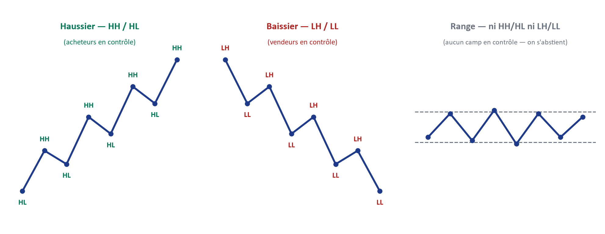
3. Les échelles de temps : HTF, ITF (ou MTF), LTF
HTF (Higher Timeframe) · ITF (Intermediate Timeframe) ou MTF (Middle Timeframe) · LTF (Lower Timeframe)
QuoiTrois rôles, jamais interchangeables, attribués à des timeframes différents selon le style de trading retenu (voir Partie VII.D). Le HTF (par exemple Monthly, Weekly, Daily) établit le contexte et le biais directeur. L'ITF, aussi appelé MTF (par exemple H4, H1), fait le pont entre ce biais et l'exécution, en affinant la zone d'intérêt. Le LTF (par exemple M15, M5, M3) est le seul niveau où une entrée est réellement déclenchée.
PourquoiLa même structure de marché existe à toutes les échelles (voir Partie VI, Fractal Model), mais toutes les échelles ne sont pas également fiables pour la même décision. Un grand timeframe filtre le bruit et révèle l'intention institutionnelle réelle, mais il est trop lent pour offrir une gestion de risque précise. Un petit timeframe offre cette précision, mais pris seul, il est statistiquement plus proche du bruit que d'une véritable empreinte institutionnelle. Aucune des deux échelles ne remplace l'autre : elles se complètent dans un ordre strict.
- Identifier, avant toute lecture de graphique, le trio de timeframes correspondant au style de trading choisi (Position, Swing, Day Trading ou Scalping — Partie VII.D précise le trio exact pour chacun).
- Ne jamais tirer un biais du LTF : le LTF sert uniquement à déclencher, jamais à décider de la direction.
- Ne jamais déclencher une entrée sur le seul HTF : le HTF fixe le cadre, il ne remplace jamais la confirmation d'exécution.
Lien avec IPF — C'est la cascade même de l'Étape I (« top-down, de Monthly à M15 ») et la raison pour laquelle changer de style de trading reconfigure entièrement quels timeframes jouent quel rôle.
4. Le principe du top-down : structure d'abord, zone ensuite
Une règle gouverne l'ensemble de ce manuel et ne souffre aucune exception : on lit toujours la structure en descendant, du plus grand timeframe vers le plus petit — jamais l'inverse. Commencer par le petit timeframe (« je regarde le M5 et je remonte pour justifier ce que j'y ai vu ») est le chemin le plus direct vers le biais de confirmation : le cerveau humain trouve toujours, a posteriori, une histoire cohérente à raconter sur un grand timeframe pour justifier un signal déjà repéré en petit.
En lisant systématiquement du grand vers le petit, le trader se prive de cette liberté dangereuse : le biais est fixé avant même de savoir à quoi ressemble le M15, ce qui rend impossible de « fabriquer » une histoire sur mesure. C'est ce principe, plus qu'aucune règle chiffrée, qui distingue une lecture de marché rigoureuse d'un exercice de justification a posteriori — et c'est lui qui structure, dans l'ordre exact, l'intégralité des Parties V à VIII de ce manuel.
Questions de vérification
- Face à un graphique, est-ce que je peux dire en quelques secondes s'il est en tendance haussière, baissière, ou en range — et justifier ma réponse par les sommets et les creux, pas par une impression ?
- Est-ce que je sais expliquer pourquoi un Higher Low trahit une pression acheteuse, et pas seulement le reconnaître visuellement ?
- Si je changeais de style de trading demain, saurais-je dire quel nouveau trio de timeframes (HTF/ITF/LTF) j'utiliserais, et pourquoi ?
- Est-ce que je comprends ce qui, concrètement, se casse dans mon analyse si je commence par le M5 au lieu du Daily ?
Partie IV — Panorama de la Terminologie ICT/SMC
1. Les familles de concepts
Cette Partie ne définit aucun concept en profondeur — c'est un choix délibéré. À ce stade de la lecture, vous ne disposez pas encore des fondations (IPDA, modèle fractal) nécessaires pour qu'une définition d'Order Block ou de Fair Value Gap ait un sens réel plutôt que d'être un mot de plus à mémoriser. L'objectif ici est uniquement de vous donner une carte : savoir que ces termes existent, à quelle famille ils appartiennent, et dans quelle Partie du manuel ils seront développés avec la structure Quoi → Pourquoi → Comment → Lien IPF → Questions de vérification.
- Structure & direction — BOS, ChoCH, Displacement, Market Structure Shift. Développés en Partie VII.C.
- Liquidité — IRL/ERL, BSL/SSL, EQH/EQL, PDH/PDL, Round Number, Trendline liquidity, DOL (global et immédiat). Développés en Partie V et Partie VII.B.
- Zones d'intérêt (POI) — Order Block, Fair Value Gap, IFVG, Breaker Block, Mitigation Block, Rejection Block, Unicorn Model. Développés en Partie VII.B.
- Temporalité & contexte macro — IPDA, Kill Zones, Candle Science, Candle Range Theory, Phase de marché, Premium/Discount, OTE. Développés en Partie V et Partie VII.A.
- Confirmation & déclenchement — Trigger LTF, Candle 2 Closure, Rejection Candle, Engulfing, modèles d'entrée canoniques. Développés en Partie VII.C.
2. Où chaque concept sera développé
En résumé : la Partie V explique le mécanisme institutionnel qui rend tous ces concepts nécessaires (l'IPDA) ; la Partie VI explique pourquoi ce mécanisme se répète à toutes les échelles (le modèle fractal) ; la Partie VII, la plus longue du manuel, donne à chaque terme sa définition complète, dans l'ordre exact où la méthode IPF les utilise réellement — Étape I, puis Étape P, puis Étape F. Si un mot de cette page vous est inconnu, ce n'est pas un manque : c'est exactement l'état dans lequel ce manuel s'attend à ce que vous soyez à ce stade.
Questions de vérification
- Est-ce que je peux citer, sans les définir, au moins un terme de chacune des cinq familles ci-dessus ?
- Est-ce que je résiste à l'envie d'aller chercher une définition maintenant, en sachant qu'elle sera plus utile une fois les Parties V et VI lues ?
Partie V — IPDA : l'Algorithme de Livraison du Prix
1. Pourquoi l'IPDA existe
Une confusion fréquente chez un trader débutant consiste à croire que le PIB, l'inflation ou une décision de banque centrale fixent directement le prix, à la minute près, sur son écran. C'est faux, et la distinction qui suit conditionne toute la suite de ce manuel : il faut séparer la Valeur fondamentale (ce que les grandes données macroéconomiques disent sur la direction générale d'un actif, à long terme) de la Livraison algorithmique du prix (le mécanisme minute par minute qui fait réellement bouger le cours).
Les grandes banques commerciales et centrales gèrent des montants qui se comptent en milliards. Elles ne peuvent pas simplement cliquer sur « Acheter » au prix affiché : la taille de leur ordre ferait s'envoler ce prix avant même que celui-ci ne soit rempli, les forçant à acheter beaucoup trop cher — un phénomène appelé slippage. Pour exécuter leurs ordres en toute discrétion et au meilleur prix, elles délèguent la livraison du marché à un programme informatique centralisé et ultra-rapide : l'IPDA, Interbank Price Delivery Algorithm. Ce programme fait bouger le prix de façon quasi-mécanique, vingt-quatre heures sur vingt-quatre, pour maintenir un marché liquide et efficient — qu'il y ait ou non des ordres humains actifs à la milliseconde considérée.
2. Les deux seules raisons pour lesquelles le prix bouge
À l'ère algorithmique, le prix ne bouge jamais simplement parce qu'il y a, à un instant donné, plus d'acheteurs que de vendeurs. L'IPDA déplace le prix pour deux raisons, et deux raisons seulement : combler une inefficience laissée par sa propre livraison (un vide de prix), ou amener le cours vers un niveau jugé injuste — Premium ou Discount — afin d'y exécuter des ordres institutionnels. Toute la suite de cette Partie ne fait que détailler ces deux mécanismes.
3. Le Range HTF et la Zone d'Équilibre : Premium, Discount, OTE
Premium, Discount, Équilibre (50 %) et OTE (Optimal Trade Entry)
QuoiL'IPDA cartographie un Range (l'écart entre le point le plus haut et le point le plus bas d'une période de référence) selon un pourcentage : la moitié supérieure du range est la zone Premium (le prix y est jugé « cher »), la moitié inférieure est la zone Discount (le prix y est jugé « bon marché »), et le point médian (50 %) est l'Équilibre — la valeur juste et neutre. L'OTE (Optimal Trade Entry) désigne la fenêtre de retracement privilégiée pour une entrée, entre 61,8 % et 78,6 % du range ancré.
PourquoiCe découpage n'est pas une convention arbitraire de charting : il correspond à une logique d'exécution réelle. Une institution qui veut vendre cherche mathématiquement à le faire au prix le plus avantageux — donc en zone Premium ; une institution qui veut acheter cherche à le faire en zone Discount. L'Équilibre est un no man's land : ni assez cher pour vendre avec avantage, ni assez bon marché pour acheter avec avantage — c'est pourquoi ce manuel le traite comme une zone bloquante, pas seulement neutre.
- Ancrer le range sur un swing HTF valide (voir Partie VII.A pour les règles exactes d'ancrage), jamais sur une structure mineure.
- Calculer le niveau 50 % de ce range pour séparer Premium et Discount.
- Vérifier que la direction envisagée est cohérente : achat seulement en Discount, vente seulement en Premium.
- Calculer la fenêtre OTE (61,8 %–78,6 %) une fois la direction confirmée, pour affiner la zone d'entrée recherchée.
Lien avec IPF — C'est la grille de lecture centrale de l'Étape I, et la condition de cohérence directionnelle vérifiée par l'outil Plan du Jour IPF avant toute autorisation d'entrée.
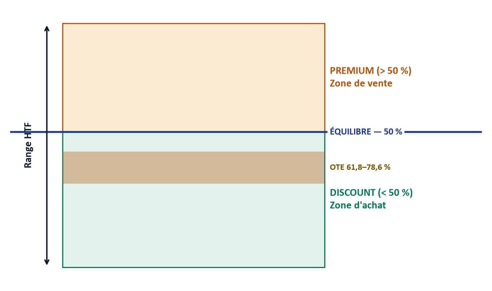
4. Les anomalies de livraison : les traces que laisse le déplacement
Lorsque l'IPDA déplace le prix de manière agressive (une phase de Displacement, voir Partie VII.C), il laisse derrière lui des imperfections de livraison que le trader entraîné sait repérer et exploiter.
Fair Value Gap (FVG) et Consequent Encroachment
QuoiUn FVG est un déséquilibre structurel mesuré sur trois bougies consécutives : l'espace entre la mèche de la première bougie et la mèche de la troisième reste vide, non traversé par la bougie du milieu. Le Consequent Encroachment est le point médian exact de ce vide — la règle veut que l'IPDA revienne, plus tard, combler au moins 50 % de cet espace pour rééquilibrer le marché.
PourquoiUn FVG est la signature d'une livraison de prix trop rapide pour être « juste » : à cette vitesse, aucune contrepartie n'a eu le temps de se former à chaque prix traversé. Le marché a une mémoire numérique de ces zones non compensées et les traite, tôt ou tard, comme des dettes à régler — ce qui explique pourquoi le prix y revient avec une régularité qui semble presque mécanique.
Comment s'y prendreRepérer une séquence de trois bougies où la mèche de la première et celle de la troisième ne se chevauchent pas ; tracer les deux bornes de cet espace ; calculer son point médian (le Consequent Encroachment) comme seuil de comblement minimal attendu.
Lien avec IPF — Le FVG est l'un des six types de POI utilisés dans l'Étape P — voir sa définition complète et sa grille de qualification en Partie VII.B.
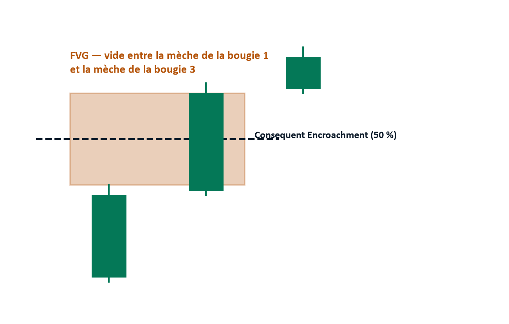
Liquidity Void (vide de liquidité)
QuoiUne bougie géante, ou une succession de bougies unilatérales sans aucune mèche de sens contraire — une livraison de prix si déséquilibrée qu'aucune contrepartie n'a pu s'y former du tout.
PourquoiL'IPDA traite ces vides comme de véritables aimants : il aspire le prix en arrière pour combler ce manque avant de pouvoir poursuivre sa tendance réelle, exactement comme pour un FVG, mais de façon encore plus marquée.
Comment s'y prendreRepérer une zone de bougies consécutives sans chevauchement de mèches ni retour visible ; retenir cette zone comme cible de retour probable, au même titre qu'un FVG.
5. Comment la liquidité fonctionne réellement
Buy-side Liquidity (BSL) et Sell-side Liquidity (SSL)
QuoiPour une institution, la liquidité n'est pas un indicateur de volume : c'est la contrepartie obligatoire pour exister sur le marché. Le BSL s'accumule au-dessus des anciens sommets (les Stop Loss des positions vendeuses, qui sont techniquement des ordres d'achat automatiques). Le SSL dort en dessous des anciens creux (les Stop Loss des positions acheteuses, des ordres de vente automatiques).
PourquoiSi une banque veut acheter une quantité massive, elle a mathématiquement besoin d'une quantité équivalente de vendeurs au même prix. Faire chuter le prix en dessous d'un ancien creux déclenche les Stop Loss des positions acheteuses particulières — des ordres de vente forcés — qui fournissent exactement la contrepartie permettant aux banques d'activer leurs propres ordres d'achat. Le mécanisme est symétrique à la hausse : une banque qui veut vendre balaie le BSL au-dessus d'un ancien sommet, pour la même raison inversée.
Comment s'y prendreRepérer les anciens sommets et creux significatifs (swing highs/lows, Equal Highs/Lows, PDH/PDL) comme poches de BSL/SSL probables ; garder à l'esprit qu'un balayage de SSL alimente typiquement une hausse, et qu'un balayage de BSL peut signaler qu'un objectif proche vient d'être atteint.
Lien avec IPF — Cette mécanique est développée en détail, avec sa typologie complète (EQH/EQL, PDH/PDL, Round Number, Trendline liquidity), en Partie VII.B.
6. Le modèle MMXM : le cycle à l'échelle d'une session
MMXM — Accumulation, Manipulation, Distribution
QuoiLe protocole en trois phases par lequel l'IPDA remplit les ordres institutionnels dormants (Limit Orders) sans jamais passer d'ordre au marché : (1) l'Accumulation — généralement en session asiatique — maintient le prix dans un couloir horizontal étroit pour inciter les particuliers à se positionner et à exposer leurs Stop Loss ; (2) la Manipulation, souvent appelée Judas Swing, propulse brutalement le prix à l'inverse de la direction réelle à l'ouverture d'une session majeure, nettoyant la liquidité du côté opposé ; (3) la Distribution libère enfin le cours vers sa véritable cible.
PourquoiCe protocole résout le problème logistique des institutions : remplir un ordre géant sans se pénaliser elles-mêmes. La phase d'Accumulation construit le « piège » (le couloir où se positionnent les particuliers) ; la Manipulation déclenche ce piège pour obtenir la contrepartie nécessaire ; la Distribution est la récompense de ce travail préparatoire — le mouvement que le trader institutionnel attend patiemment, sans jamais essayer de le deviner à l'avance.
- Repérer le couloir de range formé en session asiatique (l'« Accumulation »).
- Attendre l'ouverture d'une session majeure (Londres, New York) et surveiller un mouvement brutal à l'inverse du biais macro établi en Étape I — c'est la signature du Judas Swing.
- Ne considérer la vraie direction du jour confirmée qu'une fois ce mouvement de manipulation avéré et retourné (voir la confirmation ChoCH en Partie VII.C).
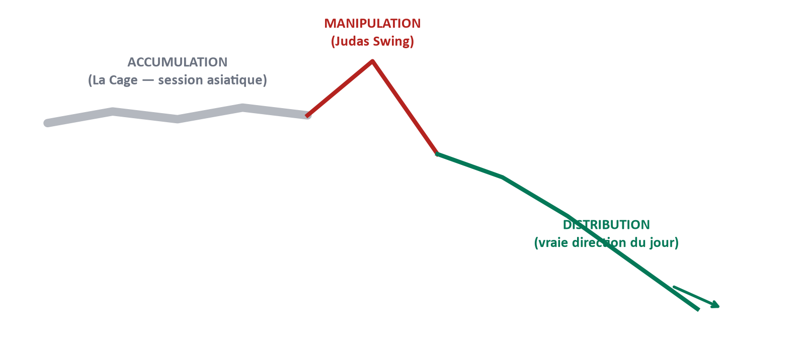
7. Le cycle IRL ↔ ERL : pourquoi le prix part... et revient
QuoiLe prix alterne en permanence entre deux états : IRL → ERL (Expansion — le prix s'éloigne d'une zone d'entrée interne, l'IRL, vers une cible de liquidité externe, l'ERL) et ERL → IRL (Pullback — le prix revient vers cette zone d'entrée interne après avoir atteint, ou approché, sa cible). Ce cycle sera défini avec sa terminologie complète (IRL, ERL, DOL) en Partie VII.B.
PourquoiCe va-et-vient n'est jamais aléatoire : il découpe les deux seuls moments où un trader IPF est autorisé à agir. La Distribution du MMXM (section 6) correspond à l'Expansion ; le retour vers un POI non mitigé correspond au Pullback — même mécanique, revue au format de l'Étape P.
Comment s'y prendreAvant toute recherche de zone, situer le prix dans ce cycle : s'il vient de s'éloigner d'une zone (Expansion), la fenêtre d'entrée est déjà passée ; s'il y revient (Pullback), c'est le moment où la lecture de zone a un sens.
8. Le schéma en 4 phases IPDA, à l'échelle d'une zone POI
Le cycle de vie complet d'une zone d'intérêt (POI)
QuoiUne zone POI traverse quatre phases successives : Phase 1 — Formation (une accumulation institutionnelle donne naissance à la future zone) ; Phase 2 — Approche (le prix se rapproche de la zone, mais l'IDM, l'Inducement, n'est pas encore pris) ; Phase 3 — IDM balayé (le niveau intermédiaire est pris, ce qui déclenche l'expansion réelle vers la zone) ; Phase 4 — Zone filtrée (les critères de qualification sont remplis, et le prix revient effectivement réagir dans la zone).
PourquoiCe schéma est la même mécanique que le MMXM (section 6), observée à une échelle plus fine : celle d'une zone précise plutôt que d'une session entière. La Phase 1 du POI correspond à l'Accumulation du MMXM ; les Phases 2-3 (approche, puis IDM balayé) correspondent à la Manipulation ; la Phase 4 correspond à la Distribution. C'est une illustration directe du principe fractal développé en Partie VI : le même schéma directionnel, à deux échelles différentes.
Comment s'y prendreFace à une zone POI candidate, se demander systématiquement à quelle phase du cycle elle se trouve actuellement — ne jamais entrer en Phase 2 (IDM pas encore pris), attendre la confirmation de la Phase 3, et rechercher l'entrée en Phase 4 uniquement.
Lien avec IPF — C'est très exactement la condition « IDM pris » vérifiée par l'Étape P et par le Verdict de l'outil (condition 03) — voir Partie VII.B et Partie VIII.
Questions de vérification
- Si l'on me montrait un graphique et qu'on me demandait à quelle phase (1 à 4) se trouve une zone donnée, saurais-je le justifier à partir de ce qui s'est réellement passé sur le prix, pas d'une impression ?
- Est-ce que je comprends pourquoi entrer en Phase 2 revient à entrer avant que le piège institutionnel ne se soit refermé ?
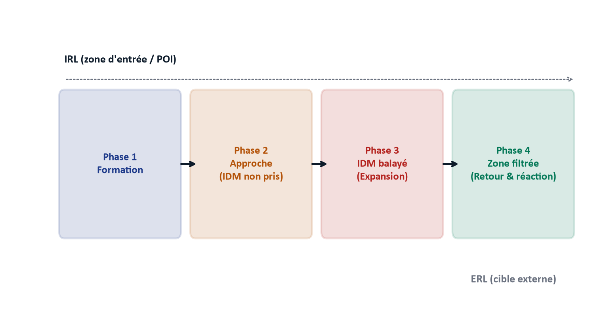
9. Pourquoi le prix revient vraiment sur une zone
Le retour du prix vers un Order Block ou un Fair Value Gap n'est pas une simple prise de profit humaine : c'est un protocole algorithmique de gestion des risques. Les grandes banques (commerciales et centrales) disposent de liquidités quasi illimitées et n'utilisent pas de levier destructeur ; si le marché entre dans une tendance macroéconomique puissante, elles peuvent conserver une position en perte latente pendant des heures, des jours, voire des semaines.
Cette perte latente est enregistrée comme une « dette de livraison » globale du système interbancaire, acceptée comme un coût technique pour avoir pu accumuler au meilleur prix. L'IPDA possède une mémoire numérique parfaite : son fonctionnement le force, tôt ou tard, à orchestrer un retracement pour ramener le cours sur cette zone d'origine non mitigée, afin que les institutions puissent solder cette position à zéro (Break-Even) — une mitigation synchrone qui explique pourquoi le prix réagit, littéralement au tick près, à des zones tracées parfois plusieurs jours ou plusieurs semaines auparavant.
C'est la réponse la plus précise que ce manuel puisse apporter à la question « pourquoi le prix revient-il dans une zone ? » : non par superstition de charting, mais parce qu'une dette de livraison existe quelque part dans le système, et que ce système est conçu pour finir, toujours, par l'apurer.
10. Marché en flux tendu : quand il n'y a pas de vrai pullback
Inducement de continuation et Internal Sweep
QuoiSur un marché en hyper-tendance, l'IPDA ne peut pas se permettre un grand pullback : la pression du flux est trop forte. Il recourt alors à deux protocoles miniatures : l'Inducement de continuation (une micro-chute qui fait croire à un retournement, pousse les particuliers à vendre à découvert et à exposer leur Stop Loss juste au-dessus, avant que le prix n'accélère et ne les balaie) et l'Internal Sweep, ou micro-Judas Swing (à l'ouverture de chaque nouvelle bougie, un plongeon bref dans le sens opposé casse le plus bas de la bougie précédente pour déclencher des stops, avant un retournement à 180 degrés qui distribue le prix).
PourquoiCes deux mécanismes appliquent le même principe que le MMXM et le schéma en 4 phases, mais à une échelle si réduite (parfois une seule bougie) que le pullback « classique » n'a pas le temps de se former. C'est la raison pour laquelle un marché en tendance très forte semble ne jamais laisser d'occasion d'entrée confortable : chaque mèche EST déjà l'occasion, comprimée à l'extrême.
Comment s'y prendreRepérer les poches de liquidité les plus proches (Equal Highs/Lows) comme cibles probables d'un Inducement local ; en tendance très forte, surveiller chaque ouverture de bougie sur le timeframe d'exécution pour une mèche de rejet suivie d'une clôture qui confirme la continuation, plutôt que d'attendre un retracement classique qui ne viendra pas.
11. IPDA vs Price Action classique — la distinction qui change tout
Le Price Action enseigné au grand public est une méthode purement visuelle et rétrospective : supports, résistances, lignes de tendance, figures chartistes. La masse croit que le prix réagit sur ces niveaux parce qu'ils seraient, en quelque sorte, magiques. En réalité, ce Price Action classique ne fait que décrire ce que la masse des traders émotionnels fait — il ne décrit jamais ce que fait l'IPDA.
Le secret à retenir : l'IPDA utilise les concepts du Price Action classique comme des appâts. Il peut délibérément créer une ligne de tendance parfaite pour inciter au trading classique, puis l'annihiler en une seule bougie une fois qu'elle est chargée de Stop Loss, pour en récupérer le carburant. La conséquence pratique de ce manuel est simple à énoncer et exigeante à appliquer : ne tradez jamais le Price Action pour lui-même ; tradez la manière dont l'IPDA le manipule.
Questions de vérification
- Est-ce que je peux expliquer, sans notes, les deux seules raisons pour lesquelles l'IPDA fait bouger le prix ?
- Face à un FVG et à un Liquidity Void sur un même graphique, saurais-je dire lequel des deux constitue l'aimant le plus fort, et pourquoi ?
- Est-ce que je peux relier, en une phrase, le MMXM (échelle session) et le schéma en 4 phases (échelle POI) comme un seul et même principe ?
- Si un collègue me demandait « mais pourquoi le prix revient-il vraiment sur cette zone tracée il y a trois jours ? », saurais-je répondre avec la mécanique de la dette de livraison, plutôt qu'avec « parce que c'est un bon niveau » ?
Partie VI — Fractal Model Mechanic : la Répétition d'Échelle
1. Le principe : un seul schéma, une infinité d'échelles
Tout ce qui a été décrit en Partie V — l'Accumulation, la Manipulation, la Distribution ; la formation d'une zone, son approche, son balayage d'Inducement, son retour — ne se produit pas seulement à l'échelle d'une session de trading ou d'un Range mensuel. Le même schéma directionnel se répète, identique dans sa logique, du Monthly jusqu'au M1 : une zone qui, à une échelle, ressemble à un simple bloc, révèle sa propre structure complète une fois zoomée (un exemple complet suit en section 3). Ce n'est pas une coïncidence esthétique — c'est la conséquence directe du fait que la logique institutionnelle qui gouverne le prix (chercher de la liquidité, rééquilibrer des inefficiences) n'appartient à aucun timeframe en particulier : elle est structurelle, donc elle s'applique partout où il y a un prix et un déséquilibre à corriger.
2. Pourquoi la confirmation descend toujours du TF supérieur vers le TF inférieur
Ce principe fractal a une conséquence pratique directe, déjà annoncée en Partie III : la lecture se fait toujours du haut vers le bas — structure d'abord, POI ensuite, confirmation en dernier lieu — jamais l'inverse. Ce manuel appelle cela le GPS séquentiel. Commencer l'analyse par un petit timeframe revient à essayer de deviner sa position sur une carte sans avoir d'abord regardé le pays, puis la région : on peut toujours trouver une rue qui semble correspondre, mais rien ne garantit qu'elle mène là où l'on croit aller.
Concrètement, cela signifie que le Monthly (ou le timeframe HTF pertinent selon le style choisi) donne la direction ; le Weekly et le Daily affinent cette direction en une zone ; le H4 et le H1 réduisent cette zone à un POI précis ; et ce n'est qu'au niveau du LTF que l'on cherche la confirmation ultime (ChoCH, Displacement, trigger) qui autorise l'entrée. Sauter une étape de cette descente — ou pire, l'inverser — revient à réintroduire le biais de confirmation que la Partie III a déjà identifié comme le principal ennemi d'une lecture rigoureuse.
Comment le Monthly, le Weekly ou le Daily « donnent » concrètement cette direction — plutôt que de rester une affirmation abstraite — est le rôle exact du Candle Range Theory : la grille de lecture du range d'une bougie HTF, détaillée en Partie VII.A. Elle est la première brique du GPS séquentiel décrit ici : sans elle, « le HTF donne la direction » resterait une intuition plutôt qu'une lecture reproductible.
3. La fractalité appliquée à IPF : le même triptyque à chaque niveau
La conséquence la plus importante du modèle fractal pour ce manuel est la suivante : les trois étapes I, P et F ne sont pas seulement trois phases successives d'une seule analyse — chacune répète, à sa propre échelle, le même triptyque en miniature. L'Étape I a son propre cycle fractal, à l'échelle macro : elle-même identifie une direction (I), une zone probable où cette direction va chercher une réaction (P, en germe), avant de passer le relais. L'Étape P, à son échelle, refait exactement ce travail sur une zone plus précise : elle identifie où se trouve la liquidité (I, en miniature), sélectionne la zone d'intérêt (P), et prépare la confirmation qui sera cherchée plus bas (F, en germe). L'Étape F, enfin, refait ce même travail une dernière fois, à l'échelle du LTF, jusqu'au déclenchement de l'entrée.
Prenons un exemple concret : un POI HTF identifié en Étape P (disons, un Order Block journalier) n'est pas un bloc uniforme et sans structure interne. Une fois zoomé sur le H1, ce même Order Block se révèle être une structure de marché complète, avec son propre swing haussier ou baissier, sa propre petite zone de liquidité interne, et son propre petit Inducement à balayer avant la réaction — exactement le schéma en 4 phases décrit en Partie V, mais rejoué à l'intérieur même de la zone qui, une échelle plus haut, semblait être un simple point sur un graphique.
4. Le lien avec les 4 profils de trader
Cette compréhension permet de résoudre une question que beaucoup de traders débutants posent mal : « quel est le meilleur style de trading, Position, Swing, Day Trading ou Scalping ? » La réponse, une fois le modèle fractal compris, est qu'il n'existe pas de style supérieur aux autres, parce qu'aucun style n'applique un modèle différent. Choisir un style de trading, ce n'est jamais choisir une méthode différente — c'est choisir l'échelle à laquelle on va appliquer exactement le même modèle IPF. Le trader Position lit le même schéma que le Scalpeur ; il le lit simplement du Monthly au Daily plutôt que du H1 au M1. La Partie VII.D détaillera les quatre profils et leur trio de timeframes exact ; retenez ici le principe qui les unit tous : une seule méthode, appliquée à l'échelle qui correspond à votre disponibilité réelle.
Questions de vérification
- Est-ce que je peux expliquer, avec un exemple concret, pourquoi un Order Block HTF n'est pas un bloc « plat » mais contient sa propre structure complète une fois zoomé ?
- Si l'on me demandait pourquoi la méthode Scalping n'est pas « plus risquée » ou « différente » de la méthode Position, mais simplement appliquée à une autre échelle, saurais-je répondre ?
- Est-ce que je comprends ce qui, précisément, casse dans mon analyse si je confirme un signal LTF sans être d'abord descendu depuis le HTF ?
Partie VII — Ma Stratégie IPF : Cadre Théorique Complet
Cette Partie est la plus longue du manuel — c'est voulu. Elle rassemble, dans l'ordre exact où la méthode IPF les applique en réel, l'intégralité de la terminologie annoncée en Partie IV, désormais pleinement définie grâce aux fondations posées par les Parties II à VI. Chaque section suit strictement la structure Quoi → Pourquoi → Comment s'y prendre → Lien avec IPF → Questions de vérification.
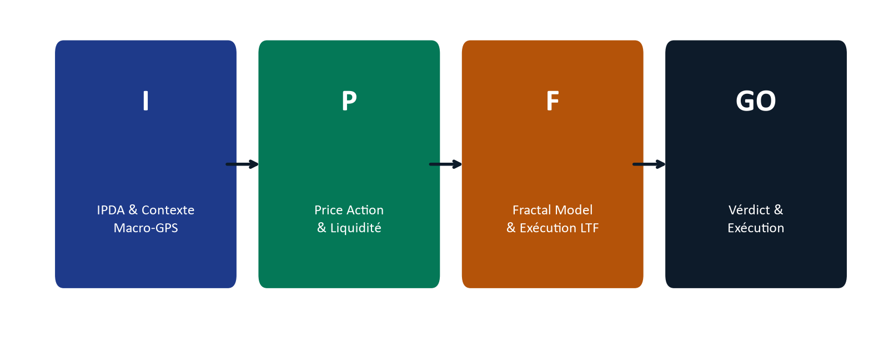
A. Étape I — IPDA & Contexte Macro-GPS
L'Étape I répond à une seule question, mais elle doit être répondue avant toute autre : dans quelle direction, et avec quelle conviction, le marché est-il orienté sur les grands timeframes ? Cette section détaille, dans l'ordre exact où l'outil Plan du Jour IPF les fait apparaître, chaque élément qui construit cette réponse.
Les trois piliers d'analyse : Technique, Fondamentale, Sentimentale
Un biais fiable ne repose jamais sur une seule source d'information. La méthode IPF en croise systématiquement trois, comptées séparément, avant de parler de convergence.
Analyse Technique
QuoiLa lecture de la cascade structurelle top-down (voir Partie III) : Monthly, Weekly, Daily, H4, H1, M30, M15 selon le style retenu, chacun lu en Haussier / Baissier / Range, jamais dans l'autre sens.
PourquoiC'est la seule des trois analyses qui provient directement du prix lui-même — les deux autres sont des filtres de cohérence, pas des sources de direction primaire.
Comment s'y prendreDérouler la cascade des timeframes du plus grand au plus petit, sans sauter de niveau, et ne retenir un biais que si au moins deux grands timeframes de la paire d'ancrage du style choisi pointent dans le même sens.
Analyse Fondamentale : le DXY
QuoiL'indice du dollar américain (DXY), lu sur le même timeframe que le biais Daily de l'or, pour sa structure (HH/HL contre LH/LL) — jamais pour son niveau absolu.
PourquoiL'or et le dollar entretiennent une corrélation inverse classique : un DXY baissier confirme un biais long sur l'or, un DXY haussier confirme un biais short. Ignorer le DXY revient à trader l'or sans tenir compte de la devise dans laquelle il est coté.
Comment s'y prendreOuvrir le DXY sur le même timeframe que le biais Daily de l'or ; lire uniquement sa structure (LH/LL = DXY baissier, HH/HL = DXY haussier) ; vérifier la cohérence avec le biais technique.
Ressources pour l'analyse fondamentaleForexFactory.com·FinancialJuice.com·Myfxbook.com
Analyse Sentimentale : le VIX
QuoiL'indice de volatilité VIX, lu par sa pente sur les derniers jours — jamais par son niveau absolu — pour distinguer un climat Risk-On (appétit pour le risque) d'un climat Risk-Off (fuite vers la sécurité).
PourquoiUn VIX en hausse traduit une peur croissante : l'or, valeur refuge, en profite typiquement, ce qui soutient un biais long. Un VIX en baisse traduit un retour de l'appétit pour le risque : l'or perd ce moteur, ce qui rend un biais short plus favorable. Piège à connaître : en cas de choc systémique réel, l'or et le dollar peuvent monter ensemble comme double refuge — la corrélation inverse du DXY s'inverse alors, et c'est le VIX qui doit primer dans la lecture.
Comment s'y prendreObserver la tendance du VIX sur les derniers jours (pas son niveau) ; en hausse → Risk-Off, tailwind pour un long sur l'or ; en baisse → Risk-On, prudence sur un long.
Ressource pour l'analyse sentimentaleSoraMacro.com
Ces trois jambes — Technique, DXY, VIX — sont comptées séparément puis converties en un score de convergence sur 3 : Haute (3/3 alignés), Modérée (2/3), Fragile (1/3 ou moins). Une convergence Fragile doit primer sur un signal technique seul, même valide : le plan impose alors un scalp très prudent, ou plus simplement, l'absence de trade.
Phase de marché : Accumulation, Expansion, Pullback
QuoiTrois états possibles du marché sur le Daily : Accumulation (le prix consolide dans un couloir, sans expansion ni retour), Expansion (le prix s'éloigne de sa zone d'entrée vers sa cible, trajectoire IRL→ERL), Pullback (le prix revient vers sa zone d'entrée après une expansion, trajectoire ERL→IRL).
PourquoiSavoir dans quelle phase se trouve le marché indique directement quel type d'action est cohérent : chercher une zone d'entrée n'a de sens qu'en Pullback ; poursuivre une position n'a de sens qu'en Expansion ; s'abstenir a du sens en Accumulation.
Comment s'y prendreObserver le Daily : un couloir horizontal signale l'Accumulation ; un déplacement franc dans une direction, loin de la dernière zone d'entrée, signale l'Expansion ; un retour vers cette zone après le déplacement signale le Pullback — c'est le moment où l'entrée se prépare.
Lien avec IPF — C'est le champ « Phase de marché » de l'Étape I, et un ingrédient direct du narratif du jour.
Candle Range Theory (à ne pas confondre avec Candle Science)
QuoiUne grille de lecture appliquée au range d'une bougie, réservée dans la méthode IPF au cycle des grands timeframes (Monthly, Weekly, Daily) — c'est elle qui produit la classification Accumulation/Expansion/Pullback ci-dessus. En dessous (H4, H1, M30, M15), on ne lit plus le range d'une bougie mais la structure pure (HH/HL, LH/LL).
PourquoiMélanger les deux grilles de lecture sur un même timeframe produit des conclusions contradictoires — un piège méthodologique explicitement documenté par les outils sources de ce manuel, qu'il faut connaître pour ne jamais y tomber.
Comment s'y prendreNe jamais appliquer la Candle Range Theory en dessous du Daily ; sur H4 et en dessous, lire uniquement la structure de marché (Partie III).
Contrôle du marché et biais HTF
Le contrôle du marché (Acheteurs dominants = HH+HL, Vendeurs dominants = LH+LL — voir Partie III) est lu sur chaque timeframe de la cascade. La règle de biais de la méthode IPF est stricte : au moins deux grands timeframes de la paire d'ancrage du style choisi doivent pointer dans la même direction pour obtenir une permission de biais ; plus il y en a d'alignés, plus la probabilité est jugée forte. Une exception existe pour le style Scalping, dont la paire d'ancrage se limite à H1 et M30 (Daily et H4 devenant une confluence bonus, jamais bloquante) — voir Partie VII.D pour le détail des quatre profils.
IRL / ERL et le balayage de liquidité externe
IRL (Internal Range Liquidity) et ERL (External Range Liquidity)
QuoiL'IRL est la liquidité interne au range : c'est la zone d'entrée elle-même, le POI. L'ERL est la liquidité externe au range : c'est la cible, l'extrême que le prix va chercher. La trajectoire IRL→ERL correspond à l'Expansion ; la trajectoire ERL→IRL correspond au Pullback — les deux ensemble forment le cycle IRL ↔ ERL.
PourquoiSituer la position actuelle du prix dans ce cycle est un préalable obligatoire à toute analyse de zone : chercher un POI avant de savoir si l'on est en phase d'expansion ou de retour revient à chercher une porte sans savoir de quel côté du mur on se trouve.
Comment s'y prendreIdentifier le dernier balayage de liquidité externe (ERL) — SSL balayé (plus bas pris, carburant haussier) ou BSL balayé (plus haut pris, signal que le DOL immédiat est peut-être atteint) — puis en déduire si le marché est en Expansion ou en Pullback avant toute recherche de POI.
Lien avec IPF — C'est la base de tout le travail de l'Étape P (Partie VII.B), qui affine ce même cycle à l'échelle d'une zone précise.
Ce même cycle IRL↔ERL, lu jusqu'ici à l'échelle du range, se lit aussi à l'échelle d'une seule bougie : c'est l'objet de la Candle Science.
Candle Science : ce que la clôture tranche
QuoiUne lecture bougie par bougie (et non de structure) de la dernière bougie Daily clôturée : la mèche balaie d'abord un extrême de la veille (une prise de liquidité), puis la clôture tranche — si elle revient dans le range de la veille, la prise est rejetée (retournement) ; si le corps clôture franchement hors de ce range, la cassure est confirmée (continuation).
PourquoiCette lecture est plus fine que la seule structure HH/HL : elle capture, au niveau d'une seule bougie, si le marché a réellement accepté un nouveau prix ou s'il l'a rejeté. Une clôture Daily contraire au biais établi bloque toute la journée — c'est un champ volontairement bloquant, pas un simple indicateur parmi d'autres.
Comment s'y prendreObserver la dernière bougie Daily clôturée : mèche au-delà d'un extrême de la veille + clôture réintégrant le range de la veille = retournement ; mèche + corps clôturant nettement hors du range de la veille = continuation.
Les deux bornes possibles (High ou Low de la veille) combinées aux deux issues (retournement ou continuation) donnent quatre scénarios nommés : Reversal Haussier (balayage du Low, clôture à l'intérieur), Continuation Baissière (balayage du Low, clôture à l'extérieur), Reversal Baissier (balayage du High, clôture à l'intérieur), et Continuation Haussière (balayage du High, clôture à l'extérieur) — voir Figure 16.
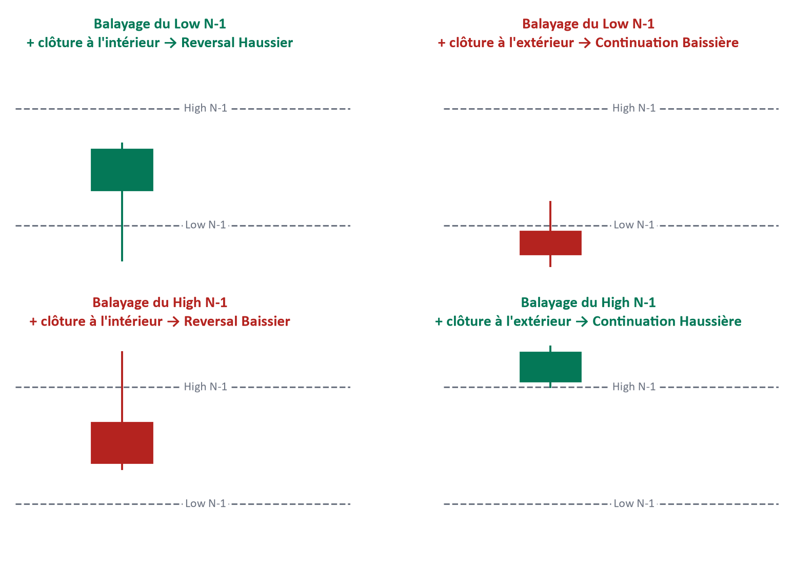
Le narratif du jour
Une fois la cascade lue, le DXY et le VIX vérifiés, la phase de marché et la Candle Science établies, tout se résume en une phrase de cadrage — le narratif du jour. Exemple donné par les outils sources : « Le Daily est en expansion haussière, le H4 est en pullback dans cette expansion, et le H1 montre des signes de reprise haussière. » Cette phrase, et elle seule, doit suffire à orienter la recherche de la suite (Étape P) : si elle ne peut pas être formulée sans hésitation, ce n'est pas encore le moment de chercher un POI.
Deux derniers filtres, indépendants du narratif mais tout aussi bloquants, doivent malgré tout être vérifiés avant toute action : l'actualité économique, et la fenêtre horaire.
Le filtre fondamental : news et calendrier économique
Aucune analyse ni aucun trade ne doit être envisagé si une annonce économique majeure (NFP, CPI, FOMC, ISM, discours de la Présidence de la Fed — signalées par une icône rouge sur Forex Factory ou équivalent) tombe dans les 30 minutes qui suivent. Ce filtre est un blocage, pas un avertissement : la case « calendrier économique consulté » doit être cochée explicitement. L'absence de vérification n'équivaut jamais à un feu vert.
Les Kill Zones : les fenêtres où les institutions agissent réellement
QuoiLes fenêtres horaires pendant lesquelles le volume institutionnel réel est concentré : Asian 3h00–7h00 UTC, London 7h00–12h00 UTC, NY AM 13h00–17h00 UTC.
PourquoiEn dehors de ces fenêtres, le marché est piloté par un volume trop faible et trop dispersé pour que la lecture institutionnelle de ce manuel s'applique de façon fiable — hors Kill Zone, on observe, on n'exécute jamais.
Comment s'y prendreVérifier l'heure UTC actuelle par rapport aux trois fenêtres ci-dessus avant d'envisager la moindre entrée ; noter que l'outil Plan du Jour IPF affiche ces mêmes fenêtres converties dynamiquement en heure de Goma (UTC+2, avec bascule automatique lors du passage à l'heure d'hiver/été américaine, début novembre à mi-mars) — les deux affichages désignent la même fenêtre réelle.
Lien avec IPF — C'est la condition 01 du Verdict (Partie VIII) : Kill Zone active, sans quoi toute autre condition devient secondaire.
Questions de vérification
- Est-ce que je peux citer les trois Kill Zones et leurs horaires UTC sans les chercher ?
- Si l'heure de Goma affichée par l'outil ne correspond pas, à première vue, à ce que j'ai mémorisé en UTC, est-ce que je sais pourquoi (bascule hiver/été américaine) plutôt que de m'alarmer ?
Questions de vérification
- Si l'on me demandait de formuler le narratif du jour à partir d'un graphique donné, en une seule phrase et sans notes, saurais-je le faire ?
- Est-ce que je comprends pourquoi une convergence Fragile (DXY et VIX contraires à la lecture technique) doit primer sur un signal technique par ailleurs valide ?
- Est-ce que je peux expliquer pourquoi la Candle Range Theory ne doit jamais être appliquée en dessous du Daily ?
- Est-ce que je sais, pour le style de trading que je pratique, quelle paire de timeframes sert d'ancrage à la règle de biais ?
B. Étape P — Price Action & Liquidité
Une fois la direction établie (Étape I), l'Étape P répond à la question suivante : où, précisément, le prix est-il susceptible d'aller, et depuis quelle zone institutionnelle peut-il y réagir ? C'est l'étape de la cartographie — celle qui transforme un biais en une zone exploitable.
Le cycle IRL ↔ ERL, appliqué à la sélection de zone
Avant toute recherche de zone, il faut situer la position actuelle du prix dans le cycle IRL↔ERL (défini en Partie VII.A) : si le marché est en Expansion (IRL→ERL), la zone d'entrée a déjà été quittée et il faut attendre soit une nouvelle formation, soit le pullback à venir ; si le marché est en Pullback (ERL→IRL), c'est le moment où la recherche de POI a un sens. Chercher un POI pendant une Expansion revient à chercher une porte d'entrée sur un train déjà parti.
DOL : quelle cible viser réellement
DOL (Draw On Liquidity) global et immédiat
QuoiLe DOL est l'attraction du prix vers une poche de liquidité — une destination probable, jamais une garantie. Le DOL global est l'extrême final du range, la vraie cible. Le DOL immédiat est la liquidité la plus proche, et c'est très souvent un simple appât (un IDM) plutôt qu'une vraie destination.
PourquoiConfondre les deux est l'une des erreurs les plus coûteuses de la méthode : viser le DOL immédiat revient à prendre un profit sur l'appât plutôt que sur la vraie cible, et surtout à placer un Take Profit sur un niveau que l'IPDA n'a jamais eu l'intention de respecter comme destination finale.
- Identifier tous les extrêmes de liquidité visibles sur la zone HTF (BSL/SSL, EQH/EQL, PDH/PDL).
- Qualifier le candidat au DOL global selon cinq critères, seuil minimal 3 sur 5 : ① Standard Deviation (le TP visé se situe entre −2 et −2,5 écarts-types pour un TP1/TP2, jusqu'à −4 pour un Full TP en TP3/TP4) ; ② Ancienneté (le niveau date du Weekly ou du Daily, pas de la séance en cours) ; ③ Densité (plusieurs touches, ou Equal Highs/Lows empilés) ; ④ Virgin level (jamais rebalayé depuis sa formation) ; ⑤ Alignement MTF (visible sur au moins deux timeframes supérieurs).
- Ne considérer la cible comme qualifiée qu'à partir de 3 critères sur 5 remplis ; en dessous, ce n'est pas la vraie cible, c'est probablement l'IDM lui-même — traiter alors tout niveau intermédiaire plus proche comme un IDM candidat.
Lien avec IPF — C'est la condition 08 du Verdict (Partie VIII) : le Take Profit doit être posé sur la vraie liquidité HTF, jamais sur l'IDM.
IDM (Inducement) : le niveau qui doit être balayé avant d'entrer
IDM — Inducement
QuoiLe niveau intermédiaire que le marché balaie avant d'atteindre la vraie zone institutionnelle (qualifiée ci-dessus) — sa fonction est de collecter les Stop Loss des particuliers avant que le mouvement réel ne commence.
PourquoiTant que l'IDM n'a pas été pris, aucune entrée n'est légitime : c'est une règle bloquante, pas une préférence. Entrer avant le balayage de l'IDM revient à entrer avant que le « piège » institutionnel décrit en Partie V (MMXM, schéma en 4 phases) ne se soit refermé — c'est-à-dire au moment précis où le marché est le moins prévisible.
Comment s'y prendreAttendre la confirmation explicite que ce niveau intermédiaire a été balayé avant de chercher une entrée — jamais avant, même si la cible (DOL global) est déjà qualifiée à 3/5 ou plus.
Lien avec IPF — C'est la condition 03 du Verdict (Partie VIII) : IDM identifié et pris, vraie cible qualifiée à au moins 3/5.
Questions de vérification
- Face à un graphique, saurais-je distinguer, entre deux niveaux de liquidité visibles, lequel est probablement le DOL global et lequel est probablement l'IDM ?
- Est-ce que je comprends pourquoi une entrée prise avant le balayage de l'IDM n'est pas seulement « un peu tôt », mais structurellement prématurée ?
POI : typologie complète des zones d'intérêt
Un POI (Point of Interest) est la zone où l'on attend une réaction institutionnelle. Il a toujours deux bornes, jamais un prix unique, et son type doit être déduit du motif réellement visible sur le graphique — jamais choisi par défaut ou par confort.
La méthode IPF retient six types canoniques de POI, dans un ordre qui suit leur origine : deux naissent d'une cassure de structure (OB, BB — l'un devant la cassure, l'autre l'ayant traversée puis reprise) ; deux naissent d'un déséquilibre de prix (FVG et son inverse, IFVG) ; un naît d'un épuisement sans cassure (MB) ; le dernier est composite (Unicorn, superposition de deux des précédents). Deux zones complémentaires suivent cette typologie — Rejection Block et BPR — utiles mais en dehors des six types canoniques ; leur statut est précisé dans leur propre bloc.
OB (Order Block)
QuoiLa dernière bougie de sens opposé juste avant l'impulsion qui casse la structure. Ses bornes sont exactement le haut et le bas de cette bougie précise.
PourquoiCette bougie est l'endroit où une institution a placé un ordre trop volumineux pour être absorbé sans laisser de trace — le Displacement qui suit en est la preuve.
Comment s'y prendreRepérer l'impulsion qui casse la structure ; remonter à la dernière bougie de sens opposé immédiatement avant cette impulsion ; tracer haut et bas de cette bougie exacte ; vérifier qu'elle n'a jamais été retestée depuis (non mitigée).
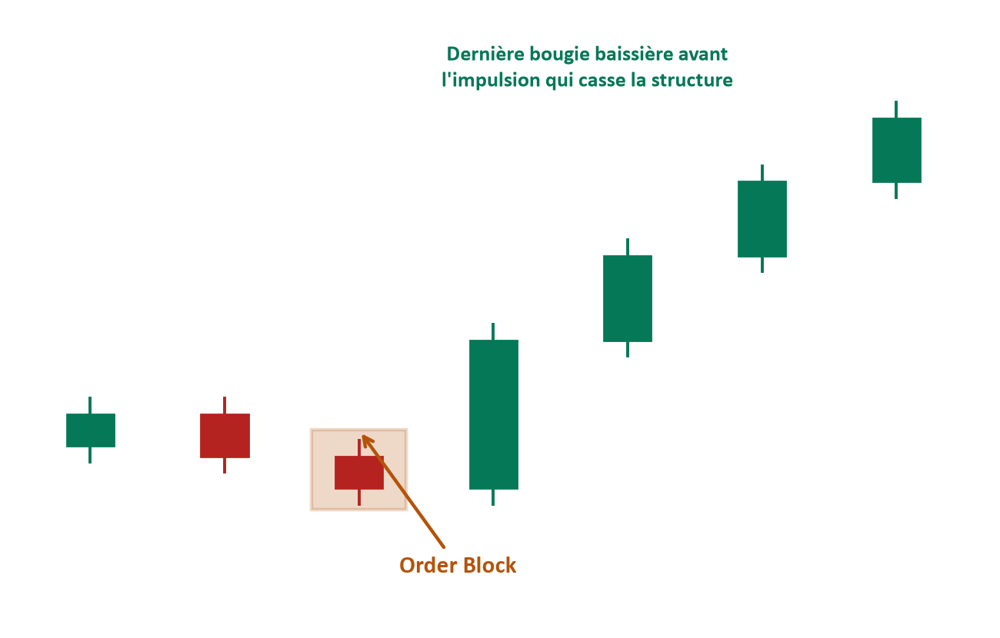
FVG (Fair Value Gap) et IFVG (Inverse Fair Value Gap)
QuoiLe FVG a été défini en Partie V (déséquilibre sur 3 bougies, avec sa règle de Consequent Encroachment à 50 %). L'IFVG est un FVG qui a été entièrement traversé par le prix, et dont le rôle s'inverse : ce qui soutenait la hausse devient une résistance, ou l'inverse.
PourquoiUn FVG traversé n'est pas un FVG annulé : le déséquilibre qu'il représentait a changé de camp, exactement comme un ancien support cassé devient souvent une résistance.
Comment s'y prendreUne fois un FVG intégralement traversé par le prix, le retracer comme zone d'intérêt inversée plutôt que de l'ignorer.
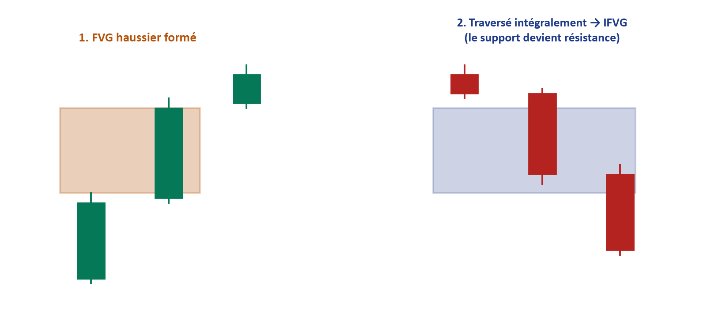
BB (Breaker Block)
QuoiUn swing dont la structure est réellement cassée par un mouvement violent — un mouvement qui balaie une liquidité identifiable au passage — puis retesté depuis l'autre côté : ce niveau cassé-et-repris devient la nouvelle zone d'intérêt.
PourquoiLa cassure elle-même sert d'appât : en apparence, c'est une continuation, et elle crée un Inducement qui pousse les traders retail à suivre ce mouvement — juste avant que l'IPDA n'inverse réellement le cours dans la direction du Market Maker. Le Breaker Block porte donc une double preuve institutionnelle : la violence de la cassure, et le retournement complet qui la dément aussitôt après.
Comment s'y prendreRepérer un swing dont la structure est franchement cassée (pas un simple débordement de mèche) ; vérifier que ce mouvement a balayé une liquidité identifiable au passage ; attendre le retour et le retest depuis l'autre côté avant de tracer la zone.
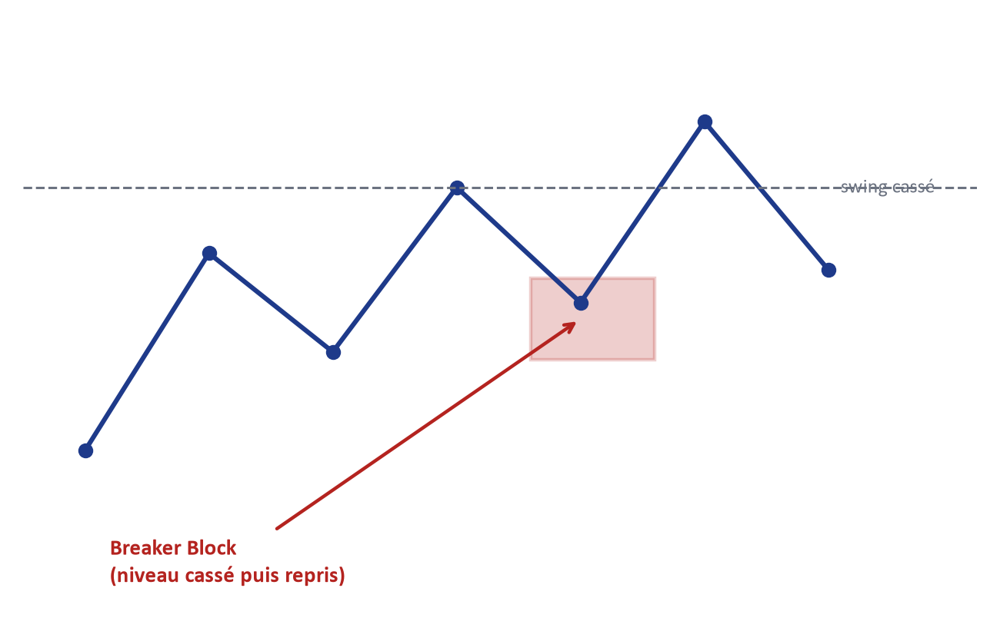
MB (Mitigation Block)
QuoiContrairement au Breaker Block, un Mitigation Block ne suppose aucune cassure de structure : c'est une zone d'épuisement — le mouvement s'arrête et s'inverse sans avoir cassé le swing protégé — où une position institutionnelle antérieure vient être soldée.
PourquoiL'absence de cassure est elle-même le signal : le camp qui menait le mouvement s'essouffle avant même d'avoir validé une continuation, et le camp opposé reprend le contrôle depuis cette zone d'origine. C'est l'application directe de la mécanique de « dette de livraison » décrite en Partie V (section 9) : une institution en perte latente attend ce retour pour clôturer sa position à Break-Even — sans qu'aucune structure n'ait eu besoin d'être cassée pour cela.
Comment s'y prendreRepérer une zone d'origine d'un mouvement qui s'est essoufflé sans casser le swing protégé, puis qui a fortement divergé du prix ; surveiller son retour comme un Mitigation Block — et vérifier précisément l'absence de cassure de structure, ce qui le distingue du Breaker Block.
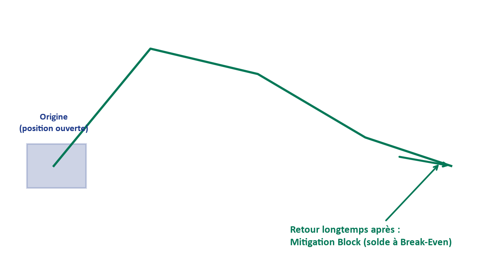
Rejection Block (zone complémentaire, hors des six types canoniques)
QuoiUne zone marquée par un rejet net et répété du prix, sans qu'un déséquilibre de type FVG ne s'y forme nécessairement — la mèche, plus que le corps, y porte l'information.
PourquoiUn rejet répété au même niveau signale une défense active de ce niveau par un acteur suffisamment important pour absorber plusieurs tentatives. Ce n'est toutefois pas un type de trigger autonome dans la méthode IPF : il s'utilise comme observation qui renforce la lecture d'un des six types canoniques repérés à proximité, jamais comme zone d'entrée à lui seul.
Comment s'y prendreRepérer un niveau où plusieurs mèches, sur plusieurs bougies, rejettent le prix dans la même direction sans que le corps ne progresse ; tracer la zone couverte par ces mèches, et s'en servir pour renforcer — jamais remplacer — la qualification d'un OB, BB ou MB voisin.
PD Array
QuoiLe terme générique qui regroupe l'ensemble des niveaux de référence institutionnels utilisés par la grille de lecture IPDA pour l'exécution — Order Block, FVG, IFVG, Breaker Block, Mitigation Block, niveaux de liquidité (BSL/SSL, EQH/EQL), et niveaux de Fibonacci (Premium/Discount, OTE).
PourquoiAucun de ces éléments ne fonctionne isolément comme prédicteur : le PD Array est la grille complète dans laquelle chaque type de zone prend son sens, en fonction de sa position dans le Range HTF et de la liquidité qui l'entoure.
Comment s'y prendreFace à un graphique, dresser mentalement la liste des PD Arrays visibles (chaque OB, FVG, niveau de liquidité) avant de choisir lequel qualifier comme POI candidat — ne jamais s'arrêter au premier repéré.
Unicorn Model
QuoiLa superposition d'un Breaker Block et d'un FVG au même niveau — une confluence rare qui exige une preuve sur un timeframe inférieur, jamais un choix par confort.
PourquoiQuand un Breaker Block et un FVG coïncident, deux preuves institutionnelles indépendantes pointent vers la même zone : la cassure-piège du Breaker Block (Inducement retail suivi du vrai retournement de l'IPDA) et le déséquilibre laissé par l'impulsion qui a produit le FVG. C'est cette double confirmation qui rend le Unicorn Model plus puissant qu'une zone simple.
Comment s'y prendreNe retenir un Unicorn que lorsque les deux zones (Breaker Block et FVG) se chevauchent réellement sur le graphique, jamais quand elles sont seulement proches l'une de l'autre.
Lien avec IPF — C'est le Modèle d'entrée 5 de la taxonomie canonique détaillée en Partie VII.C.
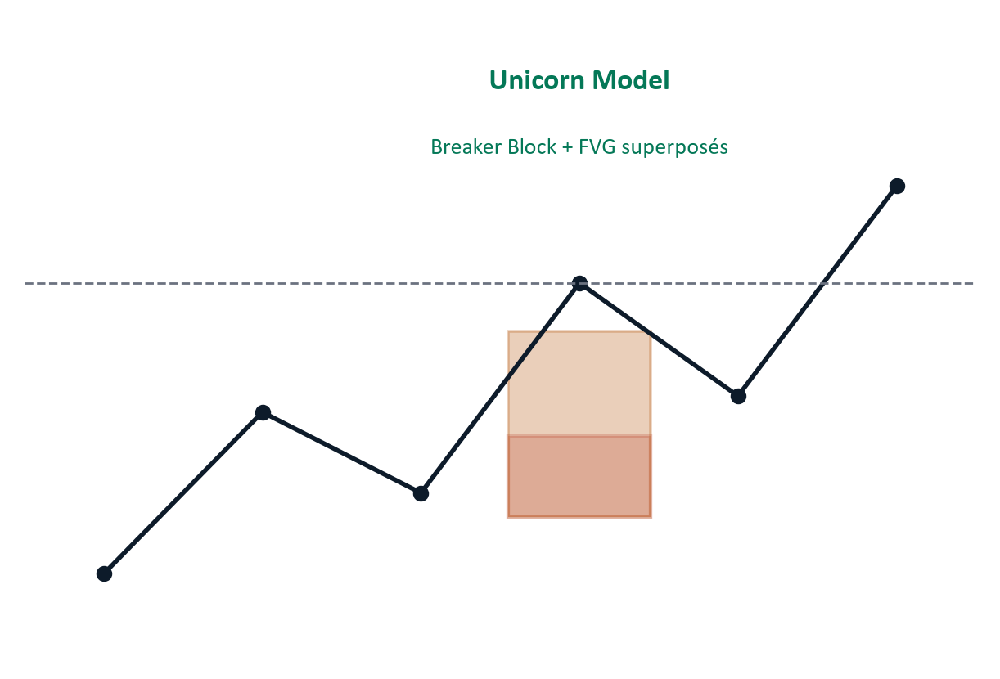
Grille de qualification du POI : seuil 4 sur 6, un critère obligatoire
QuoiSix critères qualifient un POI candidat : ① Ancienneté (formé sur Weekly ou Daily, pas sur une bougie LTF isolée) ; ② Densité (plusieurs réactions antérieures, ou recoupement avec un Equal High/Low) ; ③ Intouchabilité (jamais retesté depuis sa formation — la vraie définition de « non mitigé ») ; ④ Alignement MTF (confirmé sur au moins deux timeframes supérieurs à celui du trigger) ; ⑤ Proportion (assez éloigné du dernier swing pour une réaction institutionnelle, pas 2-3 points de bruit) ; ⑥ Liquidité adjacente, critère obligatoire (la zone se situe juste au-dessus ou en dessous d'un pool de liquidité nommable, que le prix balaie en premier avant d'y réagir).
PourquoiLe seuil global (4 critères sur 6) ne suffit pas seul : le critère ⑥ est une condition supplémentaire et non négociable, parce qu'un POI sans liquidité adjacente nommable n'a aucune raison structurelle d'attirer une réaction institutionnelle, quel que soit le score obtenu sur les cinq autres critères.
Comment s'y prendreÉvaluer les six critères un par un sur le POI candidat ; ne le qualifier que si au moins quatre sont remplis et si le critère ⑥ (liquidité adjacente) l'est également, sans exception.
Lien avec IPF — C'est la condition 04 du Verdict (Partie VIII) : POI qualifié, zone Premium/Discount cohérente, retour filtré.
Grille complémentaire : 8 confluences et classification Tier
QuoiUne grille de lecture rapide, complémentaire à la grille à 6 critères ci-dessus, qui compte le nombre de confluences alignées sur une même zone parmi huit : FVG, Order Block, position Premium/Discount, liquidité à proximité, structure de marché favorable, ChoCH attendu ou confirmé, session de trading pertinente, alignement H4/H1/M15. Le compte obtenu classe le POI en Tier S (exceptionnel), Tier 1 (fort), Tier 2 (moyen) ou Tier 3 (faible mais acceptable).
PourquoiCette grille ne remplace jamais la grille à 6 critères — elle offre une lecture d'ensemble, plus rapide à l'œil, utile pour comparer plusieurs zones candidates entre elles avant d'appliquer l'analyse complète à la plus prometteuse.
Comment s'y prendreCompter, pour chaque zone candidate, combien des huit confluences sont réellement observables ; classer en Tier S/1/2/3 pour prioriser laquelle analyser en détail avec la grille à 6 critères.
Premium / Discount appliqué au POI
Une fois un POI qualifié, sa cohérence directionnelle doit être vérifiée : un POI d'achat doit se situer en zone Discount (moins de 50 % du range ancré), un POI de vente en zone Premium (plus de 50 %). Un POI par ailleurs valide mais situé dans la mauvaise moitié du range est traité comme un blocage, pas comme un simple avertissement — voir Partie V, section 3.
Liquidité adjacente nommable et schéma AMD
EQH/EQL, PDH/PDL, Round Number, Trendline liquidity
QuoiLes quatre formes les plus courantes de liquidité adjacente nommable exigée par le critère ⑥ ci-dessus : EQH/EQL (Equal Highs/Lows — plusieurs sommets ou creux au même niveau, signalant une accumulation de stops), PDH/PDL (Previous Day High/Low — bornes d'ancrage fréquentes en Daily), Round Number (niveau psychologique rond), Trendline liquidity (liquidité accumulée le long d'une ligne de tendance évidente).
PourquoiCes quatre formes sont les endroits où l'enseignement classique du trading pousse le plus grand nombre de particuliers à placer leurs ordres — elles sont donc, presque par définition, les réservoirs de contrepartie les plus fiables pour une institution.
Comment s'y prendreAvant de valider le critère ⑥ d'un POI, identifier explicitement laquelle de ces quatre formes se trouve juste à côté de la zone, et dans quel sens le prix devrait la balayer en premier.
Le schéma AMD (introduit en Partie II) trouve ici son application concrète : le POI se situe presque toujours juste au-delà d'une liquidité nommable — un Equal High/Low, un haut ou un bas de session, ou une zone d'Inducement — que le prix balaie en premier avant de revenir y réagir.
BPR — Balanced Price Range (zone spécialisée, hors des six types canoniques)
QuoiLa zone de chevauchement exact entre un Fair Value Gap haussier et un Fair Value Gap baissier formés au même niveau — un espace où le prix a laissé, dans les deux sens, un déséquilibre non comblé.
PourquoiCette double origine rend le BPR particulièrement dense en information : deux mouvements impulsifs, dans deux directions différentes, y ont chacun laissé une dette de livraison. Ce n'est pas un septième type de POI générique : c'est une zone spécialisée, réservée au Modèle d'entrée 2 (Sweep + BPR, Partie VII.C), et à lui seul.
Comment s'y prendreRepérer deux FVG de sens opposés qui se chevauchent sur la même plage de prix ; tracer la zone commune aux deux comme BPR.
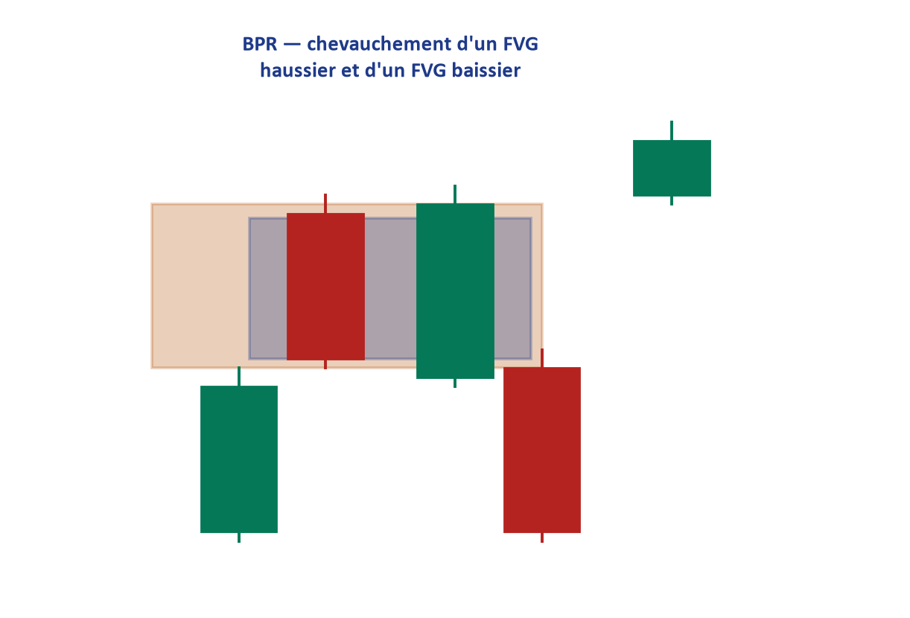
Judas Swing et Dealing Range, appliqués à la sélection de zone
Le Judas Swing (défini en Partie V comme la phase de Manipulation du cycle MMXM) trouve ici son utilité pratique directe : le mouvement de manipulation qui balaie la liquidité d'un côté du Dealing Range (l'autre nom, utilisé par certaines ressources, pour désigner le Range HTF ou le couloir d'Accumulation asiatique) est précisément ce qui doit être identifié avant de considérer la zone opposée comme un POI valide. Confirmer qu'un Judas Swing a eu lieu, c'est confirmer que le « piège » institutionnel est refermé — condition nécessaire, mais non suffisante seule, avant de chercher une entrée.
Questions de vérification
- Face à deux niveaux de liquidité sur un même graphique, saurais-je justifier lequel est probablement le DOL global et lequel est un IDM, à partir des cinq critères de qualification — pas d'une impression ?
- Est-ce que je peux nommer, sans les confondre, les six types de POI de la méthode IPF et donner un trait distinctif de chacun ?
- Face à un POI qui obtient un bon score sur cinq critères mais qui échoue sur le critère ⑥ (liquidité adjacente), est-ce que je sais que ce POI doit être rejeté malgré tout ?
- Est-ce que je comprends la différence entre la grille à 6 critères (qualification stricte) et la grille à 8 confluences/Tier (comparaison rapide entre zones candidates) ?
C. Étape F — Fractal Model & Exécution LTF
Un biais correct (Étape I) et une zone qualifiée (Étape P) ne suffisent pas encore à autoriser une entrée. L'Étape F répond à la dernière question : sur le timeframe d'exécution, quelle confirmation précise atteste que la réaction attendue est réellement en train de se produire ?
BOS et ChoCH — une distinction qui ne souffre aucune exception
BOS (Break of Structure) et ChoCH (Change of Character)
QuoiLe BOS confirme une continuation dans le sens de la tendance déjà en cours : un nouveau sommet (ou creux) qui dépasse le précédent, dans le même sens que la structure établie. Le ChoCH est le premier signe structurel qu'un retournement de contrôle a eu lieu sur le timeframe d'exécution : un plus haut qui échoue à dépasser le précédent dans un marché haussier (ou l'inverse), suivi d'une cassure dans le sens opposé.
PourquoiLe BOS et le ChoCH ne mesurent pas la même chose : confondre les deux revient à confondre « la tendance continue » et « la tendance vient de s'inverser » — une erreur qui, à l'échelle de l'exécution, transforme une entrée de continuation en une entrée de retournement sans que le trader s'en rende compte.
Comment s'y prendreSur le timeframe d'exécution, identifier si le nouveau swing prolonge la structure précédente (BOS) ou la contredit pour la première fois (ChoCH) ; ne valider un ChoCH qu'à la clôture de la bougie qui le confirme — un ChoCH en cours de bougie n'existe pas, il peut être annulé avant la fermeture.
Lien avec IPF — C'est la condition 05 du Verdict (Partie VIII), qui exige spécifiquement un ChoCH confirmé — jamais un simple BOS — avant d'envisager une entrée.
Note de correspondance terminologique : certaines ressources — notamment le document de référence interne « Détails étape par étape » et la fiche de terrain A4 de BK-BOOST Ltd. — utilisent le terme MSS (Market Structure Shift) à la place, ou aux côtés, de ChoCH. Ce manuel fait le choix délibéré de ne retenir qu'un seul terme, ChoCH, pour désigner ce retournement de contrôle, afin d'éliminer toute ambiguïté : partout où vous croiserez « MSS » dans un autre document de BK-BOOST Ltd., lisez ChoCH.
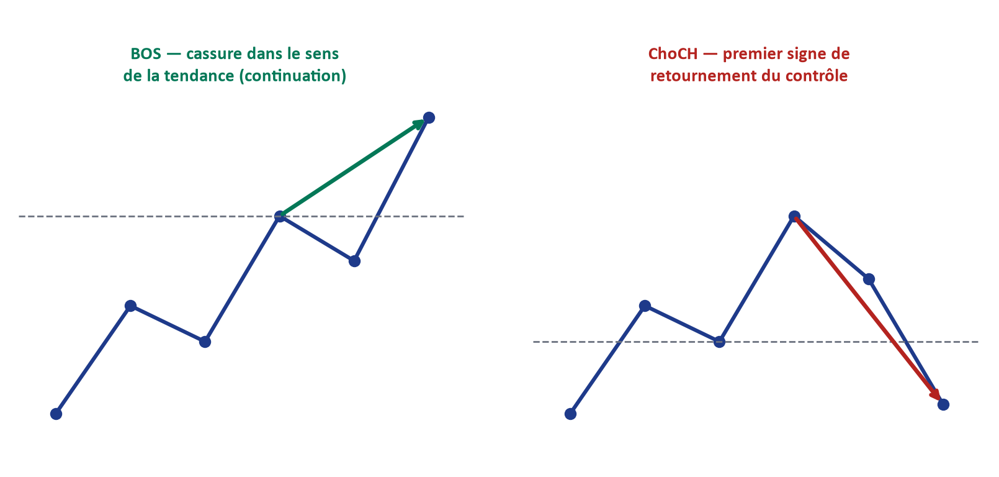
Displacement : la preuve d'un ordre institutionnel
QuoiUne impulsion suffisamment violente pour laisser un Fair Value Gap dans son sillage — le déséquilibre est la signature d'un ordre institutionnel exécuté, pas d'un mouvement ordinaire.
PourquoiUn ChoCH sans Displacement n'est qu'une hésitation : le changement de caractère doit s'accompagner d'une impulsion suffisamment forte pour laisser un vide de prix derrière elle, sans quoi rien ne garantit qu'une véritable institution soit à l'origine du mouvement.
Comment s'y prendreAprès un ChoCH confirmé, vérifier qu'un FVG (ou un Liquidity Void, Partie V) s'est bien formé dans le mouvement qui a suivi ; l'absence de ce déséquilibre doit faire douter de la qualité du signal.
Lien avec IPF — C'est le second volet, obligatoire, de la condition 05 du Verdict — ChoCH ET Displacement, jamais l'un sans l'autre.
SMT (Smart Money Technique / divergence inter-marchés)
QuoiUne divergence observée entre deux instruments corrélés au moment d'un swing : par exemple, un instrument fait un nouveau plus bas pendant qu'un autre, censé évoluer de façon similaire, ne le fait pas.
PourquoiCette divergence trahit souvent où se trouve la vraie intention institutionnelle : l'instrument qui « refuse » de suivre le mouvement du second est celui qui révèle la direction réelle attendue, une information invisible en observant un seul instrument isolément.
Comment s'y prendreComparer, au moment d'un swing suspect, le comportement de l'instrument tradé avec celui d'un instrument corrélé pertinent (par exemple le DXY pour l'or) ; une absence de confirmation croisée est un signal d'alerte, une confirmation croisée renforce la lecture.
Lien avec IPF — Le SMT est l'un des composants nommés des Modèles d'entrée 3 et 4 ci-dessous.
Les 5 modèles d'entrée canoniques (et le hors modèle)
La méthode IPF restreint volontairement l'éventail des entrées possibles à une taxonomie de cinq modèles nommés, plus une case « hors modèle » qui ne donne jamais, seule, d'autorisation d'entrée. Choisir un modèle n'est pas une formalité administrative : c'est la garantie que l'entrée repose sur une combinaison de signaux déjà validée, et non sur une improvisation du moment.
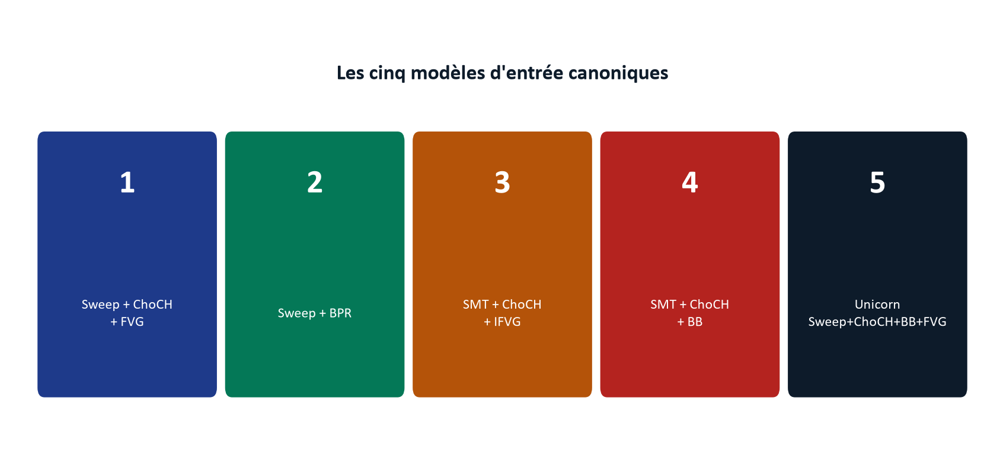
- Modèle 1 — Sweep + ChoCH + FVG : un balayage de liquidité, suivi d'un ChoCH confirmé, avec entrée sur le FVG laissé par le Displacement qui l'accompagne.
- Modèle 2 — Sweep + BPR : un balayage de liquidité suivi d'une entrée sur un BPR (la zone de chevauchement entre deux FVG opposés, Partie VII.B).
- Modèle 3 — SMT + ChoCH + IFVG : une divergence inter-marchés confirmée, avec ChoCH et entrée sur un Inverse Fair Value Gap.
- Modèle 4 — SMT + ChoCH + BB : une divergence inter-marchés confirmée, avec ChoCH et entrée sur un Breaker Block.
- Modèle 5 — Unicorn (Sweep + ChoCH + BB + FVG) : la confluence la plus exigeante, superposant un Breaker Block et un FVG (Partie VII.B) après un balayage de liquidité et un ChoCH confirmé.
Toute configuration qui ne correspond clairement à aucun de ces cinq modèles est classée « hors modèle » : elle peut être notée, mais elle n'autorise jamais, à elle seule, une entrée dans le cadre strict de ce manuel.
Cas particulier du Modèle 2 : il ne cite pas de ChoCH, contrairement aux quatre autres. Ce n'est pas une exception au principe « ChoCH obligatoire » — c'est que la preuve y est portée autrement : un BPR naît de deux FVG opposés, donc de deux impulsions déjà confirmées dans les deux sens, ce qui joue le même rôle probatoire qu'un ChoCH explicite pour les autres modèles.
Trigger LTF et OTE : le dernier verrou avant l'entrée
Le trigger est le POI, sur le timeframe d'exécution, dans lequel le prix doit revenir avant que l'entrée ne soit envisagée — un et un seul, parmi les six types définis en Partie VII.B (OB, FVG, IFVG, BB, MB, Unicorn). L'OTE (Optimal Trade Entry, Partie V.3), une fois la direction confirmée, affine encore la fenêtre de prix recherchée à l'intérieur de ce trigger, entre 61,8 % et 78,6 % du mouvement qui l'a précédé.
Confirmation finale d'entrée : un des trois signaux
Candle 2 Closure, Rejection Candle, Engulfing
QuoiTrois motifs de bougie, dont un seul suffit à valider l'entrée. Candle 2 Closure : la seconde bougie clôture en validant le rejet ou la reprise amorcée par la première, après une prise de liquidité sur la première bougie dans la zone de trigger — considéré comme le filtre le plus fiable des trois. Rejection Candle : une longue mèche rejette nettement la zone testée. Engulfing : une bougie qui englobe entièrement le corps de la précédente, confirmant le momentum.
PourquoiCes trois motifs partagent un même principe : ils exigent que le marché ait d'abord « testé » la zone (souvent en y laissant une mèche de prise de liquidité) avant de confirmer, à la clôture, que la réaction attendue a bien lieu — jamais sur la seule apparence d'une bougie en cours de formation.
Comment s'y prendreAttendre la clôture complète de la bougie de confirmation sur le timeframe d'exécution ; vérifier qu'au moins un des trois motifs est présent avant de valider l'entrée ; en cas de doute entre plusieurs motifs, privilégier le Candle 2 Closure comme référence. À ne pas confondre : la Rejection Candle est un motif de bougie de confirmation ; le Rejection Block (Partie VII.B) est une zone. Le mot commun ne signale aucun lien entre les deux.
Lien avec IPF — C'est la condition 06 du Verdict (Partie VIII) : trigger LTF identifié et confirmation présente.
Questions de vérification
- Est-ce que je peux expliquer pourquoi ce manuel exige un ChoCH, et jamais un simple BOS, pour valider une entrée — et pourquoi le terme MSS que je pourrais croiser ailleurs désigne la même chose que ChoCH ici ?
- Face à une configuration réelle, saurais-je identifier lequel des cinq modèles canoniques elle correspond, ou reconnaître qu'elle est « hors modèle » ?
- Est-ce que je comprends pourquoi un ChoCH sans Displacement doit être traité comme une simple hésitation, pas comme une confirmation ?
- Si je devais choisir un seul des trois signaux de confirmation finale comme référence en cas de doute, saurais-je dire lequel, et pourquoi ?
D. Les quatre profils de trader
Choisir un profil de trading n'est jamais choisir une méthode différente — c'est choisir l'échelle à laquelle le même modèle IPF (Partie VI, Fractal Model) s'applique. Le style est une déclaration de disponibilité réelle, pas une préférence esthétique : il détermine la paire de timeframes qui sert d'ancrage à la règle de biais (Partie VII.A), et reconfigure en cascade le timeframe de confirmation et le timeframe de trigger.
| Profil | Ancrage HTF | Confirmation | Trigger LTF | Cadence |
|---|---|---|---|---|
| Position | Monthly + Weekly | Daily | H4 | Revue hebdomadaire + 10 min/jour |
| Swing | Weekly + Daily | H4 | H1 | Rituel du soir, après clôture NY |
| Day Trading | Daily + H4 | H1 | M15 | 30 min de préparation avant la Kill Zone |
| Scalping | H1 + M30 | M15 | M5 / M3 | 15 min de préparation, attention continue |
Position — le trader de fond
Ancré sur Monthly et Weekly, le trader Position raisonne en semaines, parfois en mois. Sa lecture de structure et sa qualification de POI portent sur des zones si larges qu'un mouvement intrajournalier ne remet presque jamais en cause son biais. Le prix à payer est la patience : les occasions valides sont rares, et la tentation d'intervenir « pour faire quelque chose » entre deux revues hebdomadaires est le principal risque de ce profil.
Swing — le trader du soir
Ancré sur Weekly et Daily, le trader Swing construit son narratif après la clôture de New York et le tient jusqu'au lendemain, voire plusieurs jours. C'est un profil qui convient à qui ne peut consacrer que sa soirée au marché, sans jamais avoir besoin de surveiller un écran en journée.
Day Trading — le style pour lequel l'outil a été pensé
Ancré sur Daily et H4, avec confirmation en H1 et exécution en M15, le Day Trading est le profil central de ce manuel et de l'outil Plan du Jour IPF. La préparation se fait avant l'ouverture d'une Kill Zone ; une fois la session engagée, la discipline impose de ne plus ré-analyser en continu, sous peine de retomber dans le biais de confirmation déjà identifié en Partie III.
Scalping — le trader de l'instant
Ancré sur H1 et M30 seulement (Daily et H4 devenant une confluence bonus, jamais bloquante — voir Partie VII.A), le Scalping exige une attention continue pendant la fenêtre de Kill Zone visée, avec une confirmation resserrée sur M15 et un trigger sur M5 ou M3. C'est le profil qui exige le plus de disponibilité immédiate, et le plus impitoyable avec l'indiscipline : à cette échelle, une seconde d'hésitation a le même poids relatif qu'une journée d'hésitation pour un trader Position.
Règles communes à tous les profils
Aucun profil ne déroge aux règles transversales de la méthode IPF : plafond de deux trades par session, aucune re-entry, RRR minimal de 1,5, risque de référence à 1 % du capital par trade (signalé, non bloquant, au-delà — voir Partie VIII). Ces règles ne dépendent jamais du style choisi — seule l'échelle de lecture change, jamais la discipline d'exécution.
Changer de profil
Un changement de profil est légitime lorsqu'il répond à un changement réel de disponibilité (un nouvel emploi du temps, par exemple) ou à une incohérence démontrée entre le profil actuel et la vie du trader (incapacité chronique à respecter la cadence exigée). Il est suspect lorsqu'il suit immédiatement une série de pertes, ou la recherche d'un style « plus facile » après un NO TRADE frustrant — changer de style pour fuir une discipline inconfortable n'est jamais une raison valable. La règle de prudence de ce manuel : tenir un profil au moins trois mois avant d'envisager sérieusement d'en changer.
Questions de vérification
- Pour le profil que je pratique aujourd'hui, est-ce que je peux citer sans hésiter son ancrage HTF, son timeframe de confirmation et son trigger LTF ?
- Si j'envisageais de changer de profil cette semaine, saurais-je dire honnêtement si la raison est un changement réel de disponibilité, ou une fuite après une série de pertes ?
- Est-ce que je comprends pourquoi le plafond de 2 trades par session et le RRR minimal de 1,5 s'appliquent identiquement, quel que soit mon profil ?
Partie VIII — Mon Plan du Jour IPF : Procédure Opérationnelle
Les Parties précédentes ont construit la compréhension. Celle-ci construit le geste : comment, concrètement, dérouler la méthode IPF dans l'outil Plan du Jour IPF, du réveil jusqu'au journal du soir, sans jamais sauter une étape.
0. La routine du trader — trois horizons de préparation
Avant d'entrer dans le détail étape par étape, il faut fixer le rythme concret dans lequel cette procédure s'insère. Trois horizons, trois moments où des actions précises sont attendues — et les sections 1 à 8 qui suivent développent chacun d'eux en détail.
Avant la journée — Ce qu'il faut faire, et pourquoi. Revoir le biais macro D1/H4 hérité de la veille, consulter le calendrier économique du jour, faire un point honnête sur son état de forme et sa disponibilité mentale, relire le journal de la veille. Ce moment fixe le cadre général avant même d'ouvrir l'outil — sa cadence dépend du profil (Partie VII.D) : revue hebdomadaire pour un trader Position, rituel du soir après clôture New York pour un Swing, 30 minutes avant la Kill Zone pour un Day Trader, 15 minutes pour un Scalpeur.
Avant la session de trading — Juste avant l'ouverture d'une Kill Zone. Dérouler l'Étape 0 (Pré-vol, section 1 ci-dessous), confirmer que le style de trading du jour est déjà arrêté (jamais choisi après coup selon ce que « montre » le graphique), vérifier que la Kill Zone visée est bien active, préparer les graphiques aux bons timeframes. Cet ordre — pré-vol avant graphiques — n'est pas arbitraire : il élimine toute tentation de justifier a posteriori une envie de trader déjà présente.
Avant de prendre le trade — Dans les minutes précédant l'exécution. Dérouler le Verdict (les 11 conditions, section 5), vérifier une dernière fois le RRR et le risque calculés, confirmer la présence d'un signal de confirmation finale sur la bougie en cours. C'est la dernière ligne de défense du plan : une hésitation ici doit toujours être résolue par l'abstention, jamais par la précipitation.
1. Étape 0 — Pré-vol
Avant d'ouvrir le moindre graphique, six conditions sont vérifiées — non pondérées, non compensables entre elles : si une seule est vraie, la journée s'arrête là, sans discussion.
- News rouge (NFP, CPI, FOMC, ISM, discours de la Présidence de la Fed) dans les 30 minutes
- Deux pertes consécutives déjà atteintes — journée terminée
- Objectif journalier atteint (+5 % ou −2 % du capital)
- FOMO actif — l'envie de trader plutôt que de suivre le plan
- Fatigue ou manque de concentration
- Pression financière externe
S'y ajoute une septième case, différente des six précédentes : une attestation, pas une alarme — « calendrier économique consulté pour les 30 prochaines minutes ». Elle doit être cochée explicitement une fois la vérification faite ; son absence ne doit jamais être interprétée comme un feu vert, puisque l'outil ne peut pas consulter un calendrier à votre place.
S'y ajoute enfin le compteur de trades de la session (0/1/2) : au-delà de deux trades, la session est fermée, sans exception ni re-entry — quel que soit le résultat des deux premiers.
2. Mode Manuel et Mode Auto
L'outil propose deux façons de renseigner l'Étape I : le Mode Manuel, où chaque champ est rempli en lisant directement les graphiques, et le Mode Auto, où une « fiche d'analyse » (un fichier produit à partir de captures d'écran, préparée en amont) est importée pour préremplir la cascade. Dans les deux cas, une règle ne souffre aucune exception : les prix, le capital, le risque choisi et toute décision d'exécution restent toujours manuels — jamais importés.
3. Dérouler la cascade I → P → F dans l'outil
Une fois le Pré-vol franchi, l'outil suit strictement l'ordre déjà justifié en Partie VII : cascade des sept timeframes (Étape I, section A), résidu macro DXY/VIX, confirmation de la Kill Zone et narratif ; puis position dans le cycle IRL↔ERL, qualification de la cible (grille à 5 critères) et du POI (grille à 6 critères), zone Premium/Discount (Étape P, section B) ; puis structure LTF (ChoCH, Displacement), modèle d'entrée, trigger et confirmation finale (Étape F, section C). Aucune étape ne doit être remplie hors de cet ordre, même lorsque l'issue semble déjà évidente.
4. Le module Calcul : risque et dimensionnement
Une fois l'instrument choisi (14 disponibles) et les paramètres de contrat vérifiés (valeur du point, coût aller-retour, décimales), la chaîne de calcul suivante s'applique, dans cet ordre :
- SL (points) = | prix d'entrée − prix du Stop Loss |
- Risque ($) = capital × (risque % / 100)
- Lots = Risque ($) / ( SL en points × valeur du point )
- Points de la cible = signe × ( TP − entrée ), le signe valant −1 en position vendeuse
- RRR brut = Points de la cible / SL (points) ; R net = ( Points − coût aller-retour ) / SL (points)
- La direction n'est jamais saisie à la main : elle est déduite du placement du SL — SL sous l'entrée = position acheteuse, SL au-dessus = position vendeuse.
Trois seuils gouvernent ce module : le RRR minimal de 1,5 sur le premier Take Profit (bloquant, sans exception) ; le spread maximal de 0,50 USD (bloquant) ; le risque de référence du plan, fixé à 1 % du capital (au-delà, l'outil signale un dépassement mais ne bloque pas l'entrée pour ce seul motif — une asymétrie assumée entre les règles réellement bloquantes et les règles seulement informatives).
5. Le Verdict : les onze conditions
Chaque condition ne connaît que trois états : ✓ Remplie, ✗ En échec (produit un NO TRADE), ou · À renseigner (produit un EN COURS, jamais un GO).
| # | Condition |
|---|---|
| 01 | Kill Zone active |
| 02 | Biais HTF aligné (au moins 2 grands timeframes de la paire d'ancrage) |
| 03 | IDM identifié et pris — vraie cible qualifiée ≥ 3/5 |
| 04 | POI qualifié (≥ 4/6 + critère ⑥), zone Premium/Discount cohérente, retour filtré |
| 05 | ChoCH et Displacement confirmés |
| 06 | Trigger LTF identifié et confirmation présente |
| 07 | SL technique défini, jamais élargi ensuite |
| 08 | Take Profit posé sur la vraie liquidité HTF, pas sur l'IDM |
| 09 | RRR ≥ 1,5 sur le premier Take Profit |
| 10 | Risque calculé, taille de position déterminée |
| 11 | Aucune news rouge dans les 30 minutes |
Avant même d'examiner ces onze conditions, quatre familles de blocages « hors-liste » court-circuitent tout : une case du Pré-vol cochée, le plafond de deux trades atteint, un spread supérieur à 0,50 USD, ou un blocage directionnel (par exemple une clôture Daily contraire au biais). Le narratif fragile (score de convergence ≤ 1/3 avec DXY et VIX renseignés) est un cas à part : il bloque l'entrée standard, sauf l'exception explicitement prévue en Partie VII.A — un scalp très prudent reste possible, à la discrétion du trader, jamais une entrée pleine. L'ordre de décision est strict : un blocage hors-liste → NO TRADE ; sinon, une condition en échec → NO TRADE ; sinon, une condition à renseigner → EN COURS ; et seulement alors, les onze conditions remplies → GO.
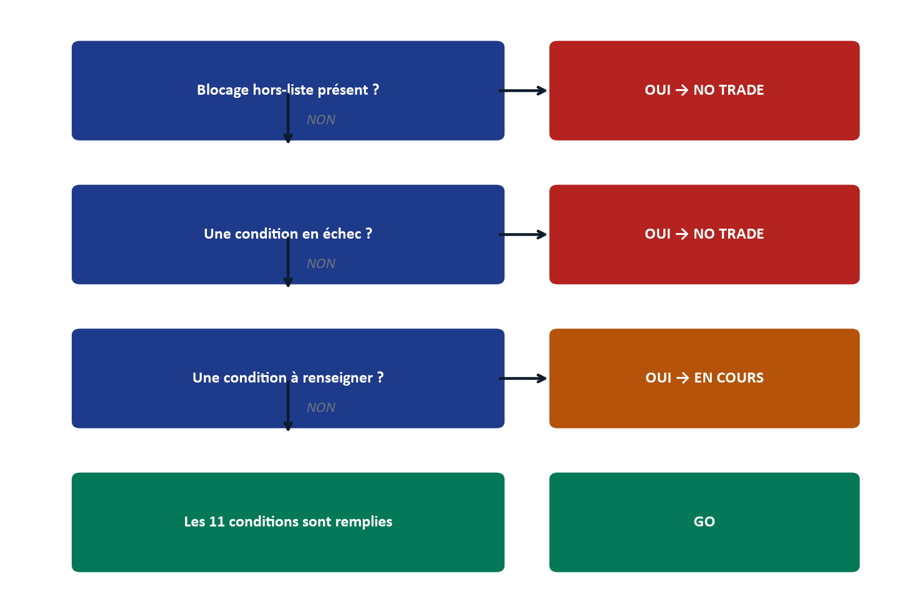
6. Gestion du trade en cours
À l'entrée, immédiatement : Stop Loss posé dans le broker, Take Profit 1 (50 %) et Take Profit 2 (50 %) posés, puis « Set & Step Back » — on cesse de fixer l'écran.
En cours de trade : dès +1R atteint, le Stop Loss est ramené au point d'entrée (Breakeven) ; une fois TP1 touché, 50 % de la position est fermée ; le reste est suivi par un trailing sur la structure M5/M15 ; si le POI qui a justifié l'entrée est invalidé, la sortie est immédiate ; le Stop Loss n'est, en toute circonstance, jamais élargi.
7. Étude de cas guidée
Illustration (fictive, à but pédagogique) d'un parcours complet aboutissant à un GO sur XAU/USD, en Day Trading : le Daily est en expansion haussière depuis trois jours ; le H4 vient de terminer un pullback dans la zone Discount du range hebdomadaire — Daily et H4 haussiers, soit 2 grands timeframes sur 2 alignés (condition 02 remplie). Le DXY affiche une structure LH/LL sur le même horizon (corrélation inverse favorable) ; le VIX est en légère baisse (Risk-On, prudence sur le tailwind refuge, mais convergence jugée Modérée à 2/3, suffisante). La Kill Zone de Londres vient de s'ouvrir (condition 01). Le calendrier économique est vérifié : aucune news rouge dans les 30 minutes (condition 11). Le DOL global identifié est un ancien plus haut hebdomadaire, qualifié à 4/5 sur la grille de la cible ; un IDM intermédiaire (un Equal High plus proche) vient d'être balayé (condition 03). Le POI retenu est un Order Block H1, qualifié à 5/6 avec critère ⑥ rempli (Equal Highs juste au-dessus), en zone Discount (condition 04). Sur M15, un ChoCH se confirme à la clôture avec un Displacement laissant un FVG (condition 05) ; le prix revient dans ce FVG (Modèle d'entrée 1 : Sweep + ChoCH + FVG) ; une bougie Candle 2 Closure valide l'entrée (condition 06).
Le module Calcul, pour un capital de 10 000 USD et un risque de 1 % (100 USD) : entrée à 2 385,00, SL technique à 2 380,00 sous le swing protégé (SL = 5,00 points, condition 07), TP1 à 2 395,50 (10,50 points). RRR brut = 10,50 / 5,00 = 2,1 — au-delà du minimum de 1,5 (condition 09). Lots = 100 / (5,00 × 100) = 0,20 lot (condition 10). Le TP1 est posé sur le plus haut hebdomadaire identifié plus haut comme DOL global, pas sur l'IDM déjà balayé (condition 08). Les onze conditions sont remplies : GO.
Un second scénario, tout aussi instructif : le même matin, sur un autre instrument, le Daily et le H4 sont en désaccord (condition 02 à renseigner) — le Verdict affiche EN COURS, pas NO TRADE. Trois options s'offrent alors, sans qu'aucune ne soit un échec : changer d'instrument, basculer temporairement en Scalping (dont l'ancrage H1+M30 peut trancher là où Daily/H4 ne le font pas), ou ne rien faire et attendre. Un EN COURS n'est jamais un problème à résoudre à tout prix — c'est une information à respecter.
8. Pièges classiques et comment le plan protège
| Piège classique | Comment le plan protège |
|---|---|
| Confondre le DOL immédiat avec la vraie cible | Grille de qualification à 5 critères, seuil 3/5 (Partie VII.B) |
| Entrer avant que l'IDM ne soit balayé | Condition 03 du Verdict, bloquante |
| Choisir un type de POI « par défaut » | Le type doit être déduit du motif réel, jamais présélectionné |
| Ignorer une convergence fragile au profit d'un signal technique séduisant | Blocage narratif fragile (≤1/3), hors-liste, prioritaire sur les 11 conditions |
| Élargir le Stop Loss pour « laisser respirer » le trade | Condition 07 : SL technique, jamais élargi — règle sans exception |
| Reprendre un trade juste après deux pertes pour « se refaire » | Pré-vol : 2 pertes consécutives = journée terminée, hors-liste |
| Trader hors Kill Zone parce que « le setup a l'air bon » | Condition 01, et blocage hors-liste si la fenêtre n'est pas active |
Questions de vérification
- Est-ce que je peux dérouler de mémoire les trois horizons de la routine (avant la journée, avant la session, avant le trade) et ce qui est attendu à chacun ?
- Face à un cas où une seule condition sur onze est « à renseigner », est-ce que je sais que le Verdict est EN COURS, pas NO TRADE — et que ce n'est pas la même chose ?
- Est-ce que je comprends pourquoi le risque au-delà de 1 % est seulement signalé, alors qu'un RRR sous 1,5 est bloquant sans exception ?
- Si je me reconnaissais dans un des pièges classiques ci-dessus la semaine prochaine, saurais-je nommer la règle précise qui doit m'arrêter ?
Partie IX — Gestion du Risque & Journalisation
1. Formules de risk management : pourquoi ces chiffres précisément
La Partie VIII a donné la chaîne de calcul complète (SL en points, risque en dollars, lots, RRR). Cette section explique pourquoi les deux seuils qui la gouvernent — 1 % de risque par trade et un RRR minimal de 1,5 — ne sont pas des habitudes, mais des choix mathématiques délibérés.
À 1 % de risque par trade, deux pertes consécutives coûtent exactement 2 % du capital — ce qui explique pourquoi la règle de Pré-vol « objectif journalier −2 % atteint » et la règle « 2 pertes consécutives » sont volontairement alignées : elles décrivent, à ce niveau de risque, la même limite. Ce même niveau de risque signifie aussi qu'une série de dix pertes consécutives — un scénario improbable mais pas impossible sur un échantillon réduit — ne détruit pas le capital : elle laisse un compte encore capable de se reconstruire. Un risque plus élevé (2 %, 5 %) rend cette même série bien plus dangereuse, sans qu'aucun gain de rapidité ne compense réellement ce risque à moyen terme.
Le seuil de RRR à 1,5 répond à une autre logique : le taux de réussite nécessaire pour être rentable à l'équilibre (le seuil de rentabilité, égal à 1 / (1 + RRR)) diminue à mesure que le RRR augmente. À un RRR de 1,5, ce seuil est exactement de 40 % — un peu plus suffit à être rentable une fois les frais couverts ; à un RRR de 1, ce seuil grimpe à exactement 50 %, un objectif statistiquement bien plus fragile pour une méthode discrétionnaire. Ce seuil n'est donc pas arbitraire : il donne à la méthode une marge d'erreur réelle, même avec un taux de réussite modeste.
2. Le journal de trading : structure et fréquence
Chaque trade — gagnant, perdant, ou chaque journée NO TRADE — doit être consigné dans les 30 minutes qui suivent sa clôture (ou, pour un NO TRADE, avant la fin de la session). Ce délai n'est pas une contrainte administrative : au-delà de 30 minutes, la mémoire reconstruit déjà les faits pour les faire coïncider avec le résultat obtenu, ce qui rend le journal inutile pour l'objectif qu'il poursuit.
Le gabarit de journal de BK-BOOST Ltd. (le document « GABARIT_JOURNAL_BK-BOOSTLtd_IPF ») reçoit, pour chaque trade : les captures d'écran avant et après l'exécution, les onze conditions du Verdict telles qu'elles ont été remplies au moment de la décision, les paramètres de risk management (SL, TP, RRR, taille de position), l'état émotionnel au moment de l'entrée, et deux questions systématiques auxquelles répondre sans complaisance — par exemple : « Ai-je respecté chaque condition du plan, indépendamment du résultat obtenu ? » et « Qu'aurais-je fait différemment si ce trade avait été mon unique trade de l'année ? ».
Les pertes et les journées NO TRADE se journalisent avec la même rigueur que les gains : un journal qui n'archive que les succès n'est plus un outil de vérité, c'est une vitrine — et il perd, du même geste, toute utilité pour identifier une dérive de discipline avant qu'elle ne devienne coûteuse.
3. Archivage : conserver la trace, pas seulement le souvenir
Chaque journée doit être archivée sous deux formes complémentaires : un export texte (incluant les champs libres « État émotionnel » et « Note libre »), et une impression ou un export PDF, réalisé avec l'option « Graphiques d'arrière-plan » activée — sans quoi les couleurs qui portent le sens de la stratégie (le rouge du blocage, le vert de la confirmation) disparaissent du document imprimé.
L'historique conservé localement par l'outil (les quatorze derniers jours de verdicts) ne remplace jamais cet archivage actif : il est effacé si les données du navigateur sont vidées, et il ne doit jamais être confondu avec la journée en cours — rouvrir un jour archivé pour y ajouter les données du jour présent est une erreur qui corrompt les deux enregistrements à la fois.
Questions de vérification
- Est-ce que je peux expliquer, avec les chiffres, pourquoi un RRR de 1,5 fixe le seuil de rentabilité à exactement 40 %, alors qu'un RRR de 1 le fixe à exactement 50 % ?
- Si mon dernier trade avait perdu, est-ce que j'aurais consigné les mêmes détails que s'il avait gagné ?
- Est-ce que je sais pourquoi journaliser plus de 30 minutes après la clôture d'un trade réduit la valeur de ce journal ?
Partie X — Psychologie & Discipline du Trader Outillé
Toutes les Parties précédentes ont construit un cadre de lecture et d'exécution. Celle-ci s'attaque à ce qui, en pratique, fait le plus souvent échouer ce cadre : non pas une mauvaise lecture de marché, mais une décision prise sous l'influence d'un état psychologique que le trader n'a pas nommé à temps.
1. La devise du plan
« Un trade pris selon ce plan et perdu est un bon trade. Un trade pris hors de ce plan et gagné est un mauvais trade. » Cette phrase n'est pas une formule de consolation après une perte : c'est une affirmation statistique. Un seul trade, gagnant ou perdant, est du bruit — son résultat ne dit presque rien de la qualité du processus qui l'a produit. C'est sur un échantillon d'une centaine de trades, pas sur un seul, que la qualité d'un processus se révèle. Juger un trade sur son seul résultat, plutôt que sur sa conformité au plan, revient à juger un dé à un seul lancer.
C'est pourquoi les onze conditions du Verdict (Partie VIII) n'évaluent jamais la probabilité de gain d'un trade — elles vérifient uniquement sa conformité au plan. Un GO autorise l'exécution ; il ne prédit jamais le résultat.
2. Pourquoi l'outil bloque plutôt que de suggérer
L'outil Plan du Jour IPF n'émet jamais de recommandation positive à mi-parcours : tant qu'une condition n'est pas remplie, le Verdict reste EN COURS, jamais un encouragement. Ce choix de conception répond à un principe simple mais rarement énoncé : le vide n'est jamais une autorisation. Un système qui « suggère » activement pousse, par sa seule présence, à l'action ; un système qui bloque par défaut et n'autorise qu'à la dernière condition remplie n'exerce, à l'inverse, aucune pression à trader. Cette asymétrie est délibérée : elle protège contre le biais le plus documenté de tout trader discrétionnaire, celui qui consiste à vouloir agir simplement parce qu'un outil est ouvert devant soi.
3. Les déclencheurs psychologiques codés dans le Pré-vol
Trois des six conditions du Pré-vol (Partie VIII, section 1) ne décrivent aucune donnée de marché : le FOMO actif, la fatigue ou le manque de concentration, la pression financière externe. Leur présence dans une checklist par ailleurs technique n'est pas accessoire — c'est la reconnaissance explicite que l'état intérieur du trader est une condition de marché à part entière, aussi bloquante qu'une news rouge ou un spread excessif.
Traiter ces trois cases comme moins sérieuses que les autres — les cocher rapidement sans réel examen — revient à ignorer que la méthode IPF, aussi rigoureuse soit-elle sur le plan technique, ne protège en rien contre une décision prise depuis un état émotionnel dégradé. Un trader fatigué qui lit correctement un ChoCH reste un trader fatigué : la qualité de la lecture technique n'annule pas le risque que fait courir son état.
4. La discipline du quota : ce que deux trades par session protègent réellement
Le plafond de deux trades par session, sans re-entry, ne limite pas seulement le risque financier — il limite l'exposition à la fatigue de décision. Chaque trade pris consomme une capacité d'attention et de discipline qui s'épuise au fil de la session ; au-delà d'un certain nombre de décisions, la qualité du jugement se dégrade, même chez un trader expérimenté. Le quota protège donc contre un risque plus insidieux que la simple perte financière : la tentation, après un troisième ou un quatrième trade, de relâcher une condition qui aurait été respectée sans discuter en début de session.
5. L'état émotionnel comme donnée de journal, pas comme détail
Le champ « État émotionnel », présent dans chaque export du journal (Partie IX), n'est pas une case facultative ajoutée par politesse. C'est une donnée au même titre qu'un RRR ou qu'un SL en points : consignée trade après trade, elle permet, après plusieurs dizaines d'entrées, d'identifier des motifs récurrents (par exemple, une tendance à élargir le risque après une perte, ou à précipiter l'entrée un jour de fatigue) qu'aucune donnée purement technique ne révélerait seule.
6. Ritualiser l'usage quotidien
Trois habitudes, répétées sans exception, ancrent la discipline dans le temps plutôt que de la laisser dépendre de la seule volonté du moment : ouvrir l'outil avant d'ouvrir le moindre graphique (jamais l'inverse) ; choisir le style de trading du jour avant de lire, jamais après avoir vu ce que le marché « offre » ; exporter le journal chaque jour, y compris — surtout — les journées NO TRADE. Ces trois habitudes, prises ensemble, transforment la méthode IPF d'un ensemble de règles que l'on pourrait, un jour de faiblesse, choisir de contourner, en un rituel que l'on suit sans même avoir à se demander si l'on en a envie.
Questions de vérification
- Si mon dernier trade perdant respectait pourtant les onze conditions, est-ce que je le considère honnêtement comme un bon trade — pas seulement en théorie, mais dans la façon dont je m'en parle à moi-même ?
- La prochaine fois que je coche « fatigue » ou « pression financière externe » dans le Pré-vol, est-ce que je m'arrêterai vraiment, ou est-ce que je risque de la traiter comme une formalité ?
- Est-ce que je comprends pourquoi le plafond de deux trades protège autant contre la fatigue de décision que contre la perte financière ?
- Ai-je déjà consulté mon propre historique d'états émotionnels dans mon journal pour y chercher un motif récurrent — ou est-ce que je remplis ce champ sans jamais le relire ?
Partie XI — Annexes
A. Glossaire alphabétique complet
Définitions condensées, pour consultation rapide. La définition complète, avec Quoi/Pourquoi/Comment, se trouve dans la Partie indiquée entre parenthèses.
A-Book / B-Book — Deux modèles d'exécution de courtier : A-Book transmet les ordres à de vrais fournisseurs de liquidité ; B-Book prend la position opposée en interne. (Partie II)
AMD (Accumulation, Manipulation, Distribution) — Le cycle en trois temps du déplacement institutionnel du prix. (Partie II, V)
BB (Breaker Block) — Un niveau cassé puis repris, dont la cassure devient la nouvelle zone d'intérêt. (Partie VII.B)
BOS (Break of Structure) — Cassure de structure qui confirme une continuation dans le sens de la tendance en cours. (Partie VII.C)
BPR (Balanced Price Range) — Zone spécialisée (hors des six types canoniques de POI) de chevauchement exact entre un FVG haussier et un FVG baissier formés au même niveau, réservée au Modèle d'entrée 2. (Partie VII.B)
BSL / SSL (Buy-side / Sell-side Liquidity) — Poches de Stop Loss accumulées au-dessus d'anciens sommets (BSL) ou en dessous d'anciens creux (SSL). (Partie V)
Candle 2 Closure — Motif de confirmation : la seconde bougie clôture en validant le rejet ou la reprise amorcée par la première. (Partie VII.C)
Candle Range Theory — Grille de lecture du range d'une bougie, réservée aux grands timeframes (Monthly/Weekly/Daily). (Partie VII.A)
Candle Science — Lecture bougie par bougie de la dernière clôture Daily : rejet (retournement) ou cassure confirmée (continuation). (Partie VII.A)
ChoCH (Change of Character) — Premier signe structurel d'un retournement de contrôle, confirmé à la clôture. Ce manuel n'utilise que ce terme, à la place de MSS. (Partie VII.C)
Consequent Encroachment — Le point médian d'un FVG, seuil minimal de comblement attendu par l'IPDA. (Partie V)
Dealing Range — Autre nom, utilisé par certaines ressources, pour le Range HTF ou le couloir d'Accumulation. (Partie VII.B)
Displacement — Impulsion assez violente pour laisser un FVG dans son sillage — la preuve d'un ordre institutionnel. (Partie VII.C)
DOL (Draw On Liquidity) — L'attraction du prix vers une poche de liquidité. DOL global = la vraie cible ; DOL immédiat = souvent un simple appât. (Partie VII.B)
DXY — Indice du dollar américain, corrélé inversement à l'or. (Partie VII.A)
Engulfing — Bougie qui englobe entièrement le corps de la précédente, confirmant le momentum. (Partie VII.C)
EQH / EQL (Equal Highs / Equal Lows) — Plusieurs sommets ou creux au même niveau, signalant une accumulation de stops. (Partie VII.B)
ERL (External Range Liquidity) — Liquidité externe au range — la cible que le prix va chercher. (Partie VII.A)
FVG (Fair Value Gap) — Déséquilibre sur trois bougies : un vide entre deux mèches non comblé par la bougie du milieu. (Partie V, VII.B)
HTF / ITF (ou MTF) / LTF — Higher / Intermediate (Middle) / Lower Timeframe — les trois rôles de la cascade multi-timeframe. (Partie III)
IDM (Inducement) — Niveau intermédiaire balayé avant la vraie zone institutionnelle, pour collecter les stops du grand public. (Partie VII.B)
IFVG (Inverse Fair Value Gap) — Un FVG intégralement traversé, dont le rôle s'inverse. (Partie VII.B)
Internal Sweep (micro-Judas Swing) — Manipulation à l'échelle d'une seule bougie, en marché de tendance très forte. (Partie V)
IPDA (Interbank Price Delivery Algorithm) — L'algorithme institutionnel qui délivre le prix pour combler des inefficiences ou exécuter des ordres en zone Premium/Discount. (Partie V)
IRL (Internal Range Liquidity) — Liquidité interne au range — la zone d'entrée, le POI lui-même. (Partie VII.A)
Judas Swing — La phase de Manipulation du cycle MMXM : un mouvement trompeur à l'ouverture d'une session majeure. (Partie V)
Kill Zone — Fenêtre horaire où le volume institutionnel réel est concentré : Asian 3h-7h UTC, London 7h-12h UTC, NY AM 13h-17h UTC. (Partie VII.A)
Liquidity Void — Vide de livraison laissé par une succession de bougies unilatérales, agissant comme un aimant. (Partie V)
MB (Mitigation Block) — Zone d'épuisement sans cassure de structure, où une position institutionnelle antérieure vient être soldée à Break-Even. (Partie VII.B)
MMXM — Le modèle Accumulation → Manipulation → Distribution, à l'échelle d'une session. (Partie V)
MSS (Market Structure Shift) — Terme éliminé de ce manuel : traité comme synonyme de ChoCH. (Partie VII.C)
OB (Order Block) — La dernière bougie de sens opposé juste avant l'impulsion qui casse la structure. (Partie VII.B)
OTE (Optimal Trade Entry) — Fenêtre de retracement privilégiée, entre 61,8 % et 78,6 % du range ancré. (Partie V)
PD Array — Terme générique regroupant l'ensemble des niveaux institutionnels de référence (OB, FVG, BB, MB, liquidité, Fibonacci). (Partie VII.B)
PDH / PDL (Previous Day High/Low) — Haut et bas de la journée précédente — bornes d'ancrage fréquentes. (Partie VII.B)
POI (Point of Interest) — La zone où l'on attend une réaction institutionnelle — toujours deux bornes, jamais un prix unique. (Partie VII.B)
Premium / Discount — Moitié supérieure (chère, zone de vente) et inférieure (bon marché, zone d'achat) d'un range ancré, séparées par l'Équilibre à 50 %. (Partie V)
Rejection Block — Zone complémentaire (hors des six types canoniques de POI) marquée par un rejet net et répété du prix, porté par la mèche plus que par le corps. (Partie VII.B)
Rejection Candle — Bougie dont la mèche marque un rejet net du niveau testé. (Partie VII.C)
Risk-On / Risk-Off — Climat de marché déduit de la pente du VIX : Risk-Off (VIX en hausse) favorise l'or comme valeur refuge ; Risk-On (VIX en baisse) lui retire ce moteur. (Partie VII.A)
Round Number — Niveau psychologique rond, poche de liquidité nommable. (Partie VII.B)
RRR (Risk-Reward Ratio) — Rapport gain visé / risque encouru. Seuil IPF : ≥ 1,5 sur TP1, bloquant. (Partie VIII, IX)
SL (Stop Loss) — Niveau d'invalidation technique, jamais élargi après avoir été posé. (Partie VIII)
SMT (Smart Money Technique / divergence) — Divergence entre deux instruments corrélés au moment d'un swing, révélatrice de l'intention institutionnelle réelle. (Partie VII.C)
Standard Deviation (cibles) — Mesure en écarts-types de la distance d'un objectif : −2 à −2,5 pour TP1/TP2, jusqu'à −4 (Full TP) pour TP3/TP4. (Partie VII.B)
Trendline liquidity — Liquidité accumulée le long d'une ligne de tendance évidente. (Partie VII.B)
Unicorn Model — Superposition d'un Breaker Block et d'un FVG au même niveau — Modèle d'entrée 5. (Partie VII.B, VII.C)
VIX — Indice de volatilité, lu par sa pente pour distinguer Risk-On de Risk-Off. (Partie VII.A)
B. Aide-mémoire des couleurs
Le code couleur utilisé à l'écran par l'outil Plan du Jour IPF porte du sens — il ne s'agit jamais d'un choix esthétique.
| Couleur | Signification | Point de vigilance |
|---|---|---|
| Bleu | Contexte / information technique neutre | — |
| Vert | Confirmation, haussier, condition remplie | — |
| Ambre / Gold | Vigilance, classification non-directionnelle (ex. VIX) | Le gold ne décrit jamais une direction de prix |
| Rouge (sang) | Baissier, contraire à la direction recherchée | À ne jamais confondre avec le rouge de blocage |
| Rouge (brique) | Blocage — condition qui empêche l'entrée, sans lien avec une direction | Un même écran peut porter les deux rouges à la fois |
| Gris | Neutre, ou « hors session » (bloquant malgré la couleur neutre) | Exception délibérée : hors session bloque, mais n'est pas affiché en rouge |
C. Checklist imprimable
Pré-vol (avant tout graphique)
News rouge dans les 30 minutes
2 pertes consécutives atteintes
Objectif journalier atteint (+5 %/−2 %)
FOMO actif
Fatigue ou manque de concentration
Pression financière externe
Calendrier économique consulté (attestation)
Compteur de trades de la session (0/1/2)
Verdict — les onze conditions
Kill Zone active
Biais HTF aligné
IDM identifié et pris (≥ 3/5)
POI qualifié (≥ 4/6 + critère ⑥) et zone P/D cohérente
ChoCH et Displacement confirmés
Trigger LTF et confirmation présents
SL technique défini
TP sur la vraie liquidité HTF
RRR ≥ 1,5 sur TP1
Risque calculé, taille de position déterminée
Aucune news rouge ≤ 30 min
D. Table des instruments
L'outil Plan du Jour IPF propose quatorze instruments. Seul XAU/USD, l'instrument de référence de la méthode IPF, est documenté ici avec ses valeurs exactes ; pour tout autre instrument, reporter les valeurs affichées en temps réel par l'outil plutôt que de se fier à une valeur mémorisée — les conventions de contrat varient d'un courtier à l'autre.
| Instrument | Valeur du point (indicative) | Coût aller-retour (indicatif) | Décimales | Pip |
|---|---|---|---|---|
| XAU/USD (référence) | 100 | 0,30 USD | 2 | 0,01 |
| EUR/USD, GBP/USD, AUD/USD, EUR/GBP, GBP/JPY, EUR/JPY, AUD/JPY | voir l'outil | voir l'outil | voir l'outil | voir l'outil |
| US100, US30, US500, GER40 (indices) | voir l'outil | voir l'outil | voir l'outil | voir l'outil |
| BTC/USD, ETH/USD (crypto) | voir l'outil | voir l'outil | voir l'outil | voir l'outil |
E. Constantes du plan
| Constante | Valeur | Statut |
|---|---|---|
| RRR minimum sur TP1 | 1,5 | Bloquant, sans exception |
| Risque par trade (référence du plan) | 1,0 % | Signalé si dépassé, non bloquant |
| Spread maximum | 0,50 USD | Bloquant |
| Trades par session | 2 | Bloquant, aucune re-entry |
| Seuil de qualification — cible (IDM) | 3 / 5 | Bloquant |
| Seuil de qualification — POI | 4 / 6 + critère ⑥ obligatoire | Bloquant |
| Convergence macro minimale | 2 / 3 | Bloque l'entrée standard si ≤ 1/3 ; scalp très prudent resté possible (Partie VII.A) |
| Fenêtre OTE | 61,8 % – 78,6 % | Calculée |
| Consequent Encroachment | 50 % du FVG | Seuil de comblement attendu |
| Filtre news | ≤ 30 minutes avant une annonce rouge | Bloquant |
| Kill Zone Asian | 3h00 – 7h00 UTC | Condition 01 |
| Kill Zone London | 7h00 – 12h00 UTC | Condition 01 |
| Kill Zone NY AM | 13h00 – 17h00 UTC | Condition 01 |